<title>HKU iGEM 2026 Modelling</title>
<link rel="stylesheet" href="https://fonts.googleapis.com/css2?family=IBM+Plex+Mono:wght@400;500&family=IBM+Plex+Sans:wght@500;600;700&family=IBM+Plex+Serif:ital,wght@0,400;0,600;1,400&display=swap">
<style>
/* Layout: single measured column for prose, figures breaking out wider,
   a numbered act rail on the left at desk width. Colour tokens are the
   model's own semantics, so the page and every figure share one language. */
:root{
  --bg:#FAFAF8; --surface:#FFFFFF; --surface-2:#F2F3F6;
  --ink:#16181D; --ink-2:#444952; --ink-3:#6E7480;
  --rule:#D9DCE3; --rule-strong:#9AA1AE;
  --v14:#2166AC; --v14-wash:#E8F0F8;
  --fgf:#B2182B; --fgf-wash:#FBECEE;
  --gold:#C9761A; --gold-wash:#FBEEDF;
  --good:#3C7A1E; --good-wash:#EDF5E6;
  --bad:#6D2C8A; --bad-wash:#F3EBF7;
  --figure-ground:#FFFFFF;
  --font-d:"IBM Plex Sans","Helvetica Neue",Arial,sans-serif;
  --font-b:"IBM Plex Serif",Georgia,"Times New Roman",serif;
  --font-m:"IBM Plex Mono",ui-monospace,"SF Mono",Menlo,monospace;
  --measure:68ch;
}
@media (prefers-color-scheme:dark){:root:not([data-theme="light"]){
  --bg:#13151A; --surface:#1B1E25; --surface-2:#22262F;
  --ink:#ECEEF2; --ink-2:#B8BEC9; --ink-3:#8A91A0;
  --rule:#333945; --rule-strong:#5C6472;
  --v14:#7FB3DD; --v14-wash:#1B2A38;
  --fgf:#E8808F; --fgf-wash:#331A1F;
  --gold:#E9A862; --gold-wash:#352513;
  --good:#8EC46B; --good-wash:#1D2A16;
  --bad:#C79BE0; --bad-wash:#2A1C33;
  --figure-ground:#FFFFFF;
  color-scheme:dark;
}}
:root[data-theme="dark"]{
  --bg:#13151A; --surface:#1B1E25; --surface-2:#22262F;
  --ink:#ECEEF2; --ink-2:#B8BEC9; --ink-3:#8A91A0;
  --rule:#333945; --rule-strong:#5C6472;
  --v14:#7FB3DD; --v14-wash:#1B2A38;
  --fgf:#E8808F; --fgf-wash:#331A1F;
  --gold:#E9A862; --gold-wash:#352513;
  --good:#8EC46B; --good-wash:#1D2A16;
  --bad:#C79BE0; --bad-wash:#2A1C33;
  --figure-ground:#FFFFFF;
  color-scheme:dark;
}

*{box-sizing:border-box}
body{background:var(--bg);color:var(--ink);font-family:var(--font-b);
  font-size:16.5px;line-height:1.62;margin:0;-webkit-text-size-adjust:100%}
.wrap{max-width:1180px;margin:0 auto;padding-inline:20px;padding-block:0}
.col{max-width:var(--measure)}
h1,h2,h3,h4,.eyebrow,.num,nav,figcaption,table,.chip,.claim h3{font-family:var(--font-d)}
h1{font-size:clamp(2.1rem,5.4vw,3.5rem);line-height:1.04;letter-spacing:-.022em;
  font-weight:700;margin:.1em 0 .3em;text-wrap:balance;max-width:16ch}
h2{font-size:clamp(1.5rem,3.1vw,2.1rem);line-height:1.12;letter-spacing:-.016em;
  font-weight:650;margin:0 0 .35em;text-wrap:balance}
h3{font-size:1.14rem;line-height:1.28;font-weight:650;margin:2.1em 0 .4em;
  letter-spacing:-.008em;text-wrap:balance}
p{margin:0 0 1.05em;max-width:var(--measure)}
a{color:var(--v14)}
a:focus-visible,summary:focus-visible,button:focus-visible{outline:2.5px solid var(--gold);
  outline-offset:3px;border-radius:3px}
code,kbd{font-family:var(--font-m);font-size:.88em;background:var(--surface-2);
  padding:.1em .34em;border-radius:3px}
.eyebrow{font-size:.735rem;letter-spacing:.14em;text-transform:uppercase;
  font-weight:600;color:var(--ink-3);margin:0 0 .5em}

/* ---------- masthead ---------- */
.mast{border-bottom:1px solid var(--rule);padding-block:34px 26px;margin-bottom:0}
.mast .kicker{font-family:var(--font-m);font-size:.78rem;letter-spacing:.06em;
  color:var(--fgf);font-weight:500;margin:0 0 .9em}
.lede{font-size:1.2rem;line-height:1.5;color:var(--ink-2);max-width:60ch;margin-bottom:1.4em}
.thesis{font-family:var(--font-d);font-weight:600;font-size:1.06rem;color:var(--ink);
  border-left:3px solid var(--gold);padding:.5em 0 .5em 1em;max-width:58ch;margin:0 0 1.6em}

.keystrip{display:grid;grid-template-columns:repeat(auto-fit,minmax(168px,1fr));
  gap:1px;background:var(--rule);border:1px solid var(--rule);border-radius:8px;
  overflow:hidden;margin:1.8em 0 0}
.keystrip div{background:var(--surface);padding:14px 16px;min-width:0}
.keystrip .v{font-family:var(--font-d);font-weight:700;font-size:1.42rem;
  letter-spacing:-.02em;font-variant-numeric:tabular-nums;line-height:1.15}
.keystrip .k{font-size:.775rem;color:var(--ink-3);line-height:1.35;margin-top:.3em;
  font-family:var(--font-d)}

/* ---------- nav ---------- */
nav.toc{position:sticky;top:env(safe-area-inset-top,0px);z-index:20;
  background:color-mix(in srgb,var(--bg) 92%,transparent);
  backdrop-filter:blur(8px);border-bottom:1px solid var(--rule);
  margin-bottom:0;padding-block:9px}
nav.toc ul{display:flex;gap:4px;list-style:none;margin:0;padding:0;
  overflow-x:auto;scrollbar-width:thin}
nav.toc a{font-size:.8rem;font-weight:550;text-decoration:none;color:var(--ink-2);
  padding:5px 11px;border-radius:5px;white-space:nowrap;display:block}
nav.toc a:hover{background:var(--surface-2);color:var(--ink)}

/* ---------- acts ---------- */
.act{padding-block:52px;border-bottom:1px solid var(--rule)}
.act-head{display:grid;grid-template-columns:62px 1fr;gap:18px;align-items:start;
  margin-bottom:1.3em}
.num{font-size:2.5rem;font-weight:700;line-height:.9;color:var(--rule-strong);
  font-variant-numeric:tabular-nums;letter-spacing:-.04em}
@media(max-width:640px){.act-head{grid-template-columns:1fr;gap:2px}
  .num{font-size:1.5rem}}

.claim{background:var(--v14-wash);border:1px solid color-mix(in srgb,var(--v14) 24%,transparent);
  border-radius:9px;padding:17px 20px;margin:0 0 1.5em;max-width:var(--measure)}
.claim h3{margin:0 0 .3em;font-size:1.02rem;color:var(--v14);letter-spacing:.005em}
.claim p{margin:0;font-size:1rem}
.claim.warn{background:var(--fgf-wash);border-color:color-mix(in srgb,var(--fgf) 28%,transparent)}
.claim.warn h3{color:var(--fgf)}
.claim.gold{background:var(--gold-wash);border-color:color-mix(in srgb,var(--gold) 30%,transparent)}
.claim.gold h3{color:var(--gold)}

/* ---------- figures ---------- */
figure{margin:2.1em 0;max-width:100%}
figure.wide{max-width:1000px}
.figbox{background:var(--figure-ground);border:1px solid var(--rule);border-radius:9px;
  padding:14px;overflow-x:auto}
.figbox img{display:block;width:100%;height:auto;max-width:100%}
figcaption{font-size:.845rem;line-height:1.52;color:var(--ink-2);margin-top:.75em;
  max-width:78ch;font-family:var(--font-d)}
figcaption .fid{font-weight:700;color:var(--ink);letter-spacing:.01em}
figcaption .caveat{color:var(--ink-3)}
figcaption .src{font-family:var(--font-m);font-size:.78rem}

/* ---------- details / maths ---------- */
details.math{border-top:1px solid var(--rule);border-bottom:1px solid var(--rule);
  margin:1.5em 0;max-width:var(--measure)}
details.math>summary{cursor:pointer;padding:.7em 0;font-family:var(--font-d);
  font-weight:600;font-size:.9rem;color:var(--ink-2);list-style:none;
  display:flex;align-items:center;gap:.55em}
details.math>summary::-webkit-details-marker{display:none}
details.math>summary::before{content:"+";font-family:var(--font-m);color:var(--gold);
  font-weight:700;font-size:1.05rem;line-height:1}
details.math[open]>summary::before{content:"\2212"}
details.math .inner{padding-bottom:1.1em}
.eq{background:var(--surface-2);border-left:3px solid var(--v14);padding:12px 16px;
  margin:1em 0;font-family:var(--font-m);font-size:.9rem;overflow-x:auto;border-radius:0 5px 5px 0}

/* ---------- tables ---------- */
.tablewrap{overflow-x:auto;margin:1.5em 0;max-width:1000px}
table{border-collapse:collapse;font-size:.86rem;width:100%;min-width:480px}
th,td{text-align:left;padding:8px 13px;border-bottom:1px solid var(--rule);vertical-align:top}
th{font-weight:650;font-size:.76rem;letter-spacing:.055em;text-transform:uppercase;
  color:var(--ink-3);border-bottom:1.5px solid var(--rule-strong)}
td.num-c{font-variant-numeric:tabular-nums;font-family:var(--font-m);font-size:.82rem}
tbody tr:hover{background:var(--surface-2)}

.chip{display:inline-block;font-size:.69rem;font-weight:650;letter-spacing:.05em;
  text-transform:uppercase;padding:2.5px 7px;border-radius:4px;white-space:nowrap}
.chip-t1{background:var(--good-wash);color:var(--good)}
.chip-t4{background:var(--fgf-wash);color:var(--fgf)}
.chip-ok{background:var(--good-wash);color:var(--good)}
.chip-no{background:var(--bad-wash);color:var(--bad)}

/* ---------- lists ---------- */
.corr{counter-reset:c;list-style:none;padding:0;margin:1.4em 0;max-width:var(--measure)}
.corr li{counter-increment:c;position:relative;padding-left:46px;margin-bottom:1.15em}
.corr li::before{content:counter(c);position:absolute;left:0;top:1px;width:30px;height:30px;
  border-radius:50%;background:var(--bad-wash);color:var(--bad);font-family:var(--font-d);
  font-weight:700;font-size:.88rem;display:flex;align-items:center;justify-content:center}
.corr b{font-family:var(--font-d)}
.asks{list-style:none;padding:0;margin:1.3em 0;max-width:var(--measure)}
.asks li{display:grid;grid-template-columns:auto 1fr;gap:12px;padding:10px 0;
  border-bottom:1px solid var(--rule);align-items:start}
.asks .st{font-size:1rem;line-height:1.5}

/* ---------- model map ---------- */
.modelmap{width:100%;height:auto;max-width:960px;display:block;margin:0 auto}
.mm-box{fill:var(--surface);stroke:var(--rule-strong);stroke-width:1.4}
.mm-load{fill:var(--surface-2);stroke-dasharray:4 3}
.mm-now{fill:var(--good-wash);stroke:var(--good)}
.mm-scaled{fill:var(--v14-wash);stroke:var(--v14)}
.mm-data{fill:var(--gold-wash);stroke:var(--gold);stroke-width:2.2}
.mm-hyp{fill:var(--surface-2);stroke:var(--rule-strong);stroke-dasharray:5 4}
.mm-out{fill:var(--surface-2)}
.mm-t{font-family:var(--font-d);font-size:13.5px;font-weight:600;fill:var(--ink);text-anchor:middle}
.mm-s{font-family:var(--font-d);font-size:10.5px;font-weight:500;fill:var(--ink-3);
  text-anchor:middle;letter-spacing:.045em;text-transform:uppercase}
.mm-arm{font-family:var(--font-d);font-size:12px;font-weight:700;text-anchor:middle;
  letter-spacing:.09em;text-transform:uppercase}
.mm-arm-v{fill:var(--v14)} .mm-arm-f{fill:var(--fgf)}
.mm-del{font-family:var(--font-d);font-size:10.5px;fill:var(--rule-strong);
  text-anchor:middle;letter-spacing:.07em;text-decoration:line-through}
.mm-junc{font-family:var(--font-d);font-size:10px;font-weight:700;fill:var(--gold);
  text-anchor:middle;letter-spacing:.08em}
.modelmap a{cursor:pointer}
.modelmap a:hover .mm-box{stroke-width:2.6}
.maplegend{list-style:none;padding:0;margin:1.1em auto 0;max-width:760px;
  display:grid;grid-template-columns:repeat(auto-fit,minmax(255px,1fr));gap:5px 20px;
  font-size:.8rem;color:var(--ink-2);font-family:var(--font-d)}
.maplegend li{display:flex;gap:9px;align-items:center}
.sw{width:15px;height:15px;border-radius:3px;flex:0 0 auto;border:1.4px solid var(--rule-strong)}
.sw-now{background:var(--good-wash);border-color:var(--good)}
.sw-scaled{background:var(--v14-wash);border-color:var(--v14)}
.sw-data{background:var(--gold-wash);border-color:var(--gold)}
.sw-hyp{background:var(--surface-2);border-style:dashed}

/* ---------- code appendix ---------- */
.ref-banner{background:var(--surface-2);border:2px dashed var(--rule-strong);
  border-radius:10px;padding:20px 22px;margin:0 0 2em}
.ref-banner p{margin:0;max-width:none}
.ref-banner .tag{display:inline-block;background:var(--bad);color:#fff;font-family:var(--font-d);
  font-size:.7rem;font-weight:700;letter-spacing:.11em;text-transform:uppercase;
  padding:3px 9px;border-radius:4px;margin-bottom:.7em}
.dl{display:inline-flex;align-items:center;gap:9px;background:var(--v14);color:#fff;
  font-family:var(--font-d);font-weight:600;font-size:.92rem;text-decoration:none;
  padding:11px 19px;border-radius:7px;margin:.5em 0}
.dl:hover{filter:brightness(1.1)}
.filelist{display:grid;grid-template-columns:repeat(auto-fit,minmax(290px,1fr));
  gap:9px;margin:1.4em 0}
.filecard{background:var(--surface);border:1px solid var(--rule);border-radius:7px;
  padding:11px 14px;min-width:0}
.filecard .fn{font-family:var(--font-m);font-size:.85rem;font-weight:500;color:var(--v14);
  word-break:break-all}
.filecard .fd{font-size:.79rem;color:var(--ink-3);margin-top:.22em;font-family:var(--font-d);
  line-height:1.4}
details.code{border:1px solid var(--rule);border-radius:8px;margin:9px 0;background:var(--surface)}
details.code>summary{cursor:pointer;padding:11px 15px;font-family:var(--font-m);
  font-size:.85rem;font-weight:500;color:var(--v14);list-style:none;display:flex;
  justify-content:space-between;gap:12px;align-items:center}
details.code>summary::-webkit-details-marker{display:none}
details.code>summary .meta{font-family:var(--font-d);font-size:.74rem;color:var(--ink-3);
  font-weight:500;text-align:right;flex:0 0 auto}
details.code pre{margin:0;padding:15px;overflow-x:auto;background:var(--surface-2);
  border-top:1px solid var(--rule);border-radius:0 0 7px 7px;font-size:.785rem;
  line-height:1.55;max-height:600px}
details.code code{background:none;padding:0;font-size:inherit;white-space:pre}
.copybtn{font-family:var(--font-d);font-size:.74rem;font-weight:600;background:var(--surface);
  color:var(--ink-2);border:1px solid var(--rule-strong);border-radius:5px;padding:4px 10px;
  cursor:pointer}
.copybtn:hover{background:var(--surface-2);color:var(--ink)}

footer{padding-block:38px 56px;color:var(--ink-3);font-size:.85rem}
footer p{max-width:70ch}
hr.soft{border:0;border-top:1px solid var(--rule);margin:2.4em 0;max-width:var(--measure)}
.pullnum{font-family:var(--font-d);font-weight:700;font-size:clamp(1.6rem,3.4vw,2.3rem);
  letter-spacing:-.025em;color:var(--gold);line-height:1.1;margin:.2em 0 .1em}
@media (prefers-reduced-motion:reduce){*{animation:none!important;transition:none!important}}

</style>
<header class="wrap mast">
  <p class="kicker">HKU iGEM 2026 &#183; Dry Lab &#183; Mathematical Model V3</p>
  <h1>Modelling</h1>
  <p class="lede">A dual-release wound-healing patch, modelled end to end: from how much
  peptide we dissolve into the gel, through receptor occupancy and inflammation, to the
  day the wound shuts.</p>
  <p class="thesis">Every number in our device specification came out of the model
  before it came out of the lab.</p>
  <div class="keystrip">
    <div><div class="v">65&#8211;217 &#181;m</div><div class="k">NO penetration depth, against a 0.5&#8211;3&#160;mm stack &#8212; why the sensor could never have worked</div></div>
    <div><div class="v">14.5 min</div><div class="k">to 95&#160;% release of V14. The patch is a bolus, not a sustained delivery</div></div>
    <div><div class="v">R<sub>V</sub> &#8776; 10</div><div class="k">retention optimum. More retention is worse, not better</div></div>
    <div><div class="v">2.05&#215;10<sup>&#8722;7</sup></div><div class="k">solver error against the closed form, converging at second order</div></div>
  </div>
</header>

<nav class="toc"><div class="wrap"><ul>
  <li><a href="#act0">The model</a></li>
  <li><a href="#act1">1 &#183; Why the device changed</a></li>
  <li><a href="#act2">2 &#183; What the patch delivers</a></li>
  <li><a href="#act3">3 &#183; What we told the wet lab</a></li>
  <li><a href="#act4">4 &#183; Meeting the data</a></li>
  <li><a href="#wrong">What we got wrong</a></li>
  <li><a href="#asks">Requests to the wet lab</a></li>
  <li><a href="#code">Code</a></li>
</ul></div></nav>

<!-- ================= ACT 0 ================= -->
<section class="act wrap" id="act0">
  <div class="act-head"><div class="num">00</div><div>
    <p class="eyebrow">Orientation</p>
    <h2>What the model is, and what each piece is actually worth</h2>
  </div></div>

  <div class="col">
  <p>V3 is a feed-forward cascade with one input &#8212; what we load into the hydrogel &#8212;
  two therapeutic arms, and a single junction where they meet. The arms are not independent:
  without that junction this would be two unrelated appendices rather than a model of a
  combination device.</p>

  <p>The modules are not equally trustworthy, and the map says so. Models&#160;1&#8211;2 are
  predictive today, because every parameter in them is derived from the V14 sequence or from
  the patch geometry. Models&#160;3&#8211;5 are predictive in <em>scaled</em> form, before any
  affinity is measured. Model&#160;6 is a structured hypothesis: its coupling functions are
  phenomenological closures that no planned experiment constrains. Colour-coding that honestly
  costs us nothing and tells a reader where to apply pressure.</p>
  </div>

  <figure class="wide">
    <div class="figbox">
<svg viewBox="0 0 920 492" class="modelmap" role="img"
     aria-label="Model map: loading feeds Model 1 release and Model 2 tissue transport,
     which split into the V14 arm (Models 3, 4, 5) and the FGF2-G3 arm (Model 6).
     The arms meet at a single junction. The V2 feedback edge is deleted.">
  <defs>
    <marker id="ar" viewBox="0 0 10 10" refX="9" refY="5" markerWidth="6"
            markerHeight="6" orient="auto-start-reverse">
      <path d="M0,0 L10,5 L0,10 z" fill="var(--rule-strong)"/>
    </marker>
    <marker id="arj" viewBox="0 0 10 10" refX="9" refY="5" markerWidth="6"
            markerHeight="6" orient="auto-start-reverse">
      <path d="M0,0 L10,5 L0,10 z" fill="var(--gold)"/>
    </marker>
    <marker id="arg" viewBox="0 0 10 10" refX="9" refY="5" markerWidth="6"
            markerHeight="6" orient="auto-start-reverse">
      <path d="M0,0 L10,5 L0,10 z" fill="var(--rule)"/>
    </marker>
  </defs>

  <!-- deleted V2 feedback edge -->
  <path d="M150 405 C 40 405, 40 86, 150 86" fill="none" stroke="var(--rule)"
        stroke-width="2" stroke-dasharray="7 5" marker-end="url(#arg)"/>
  <text x="34" y="250" class="mm-del" transform="rotate(-90 34 250)">
    V2 feedback edge — DELETED
  </text>

  <!-- spine -->
  <line x1="460" y1="62" x2="460" y2="86" stroke="var(--rule-strong)" stroke-width="2" marker-end="url(#ar)"/>
  <line x1="460" y1="132" x2="460" y2="156" stroke="var(--rule-strong)" stroke-width="2" marker-end="url(#ar)"/>
  <path d="M460 202 L460 222 L250 222 L250 246" fill="none" stroke="var(--rule-strong)" stroke-width="2" marker-end="url(#ar)"/>
  <path d="M460 202 L460 222 L690 222 L690 246" fill="none" stroke="var(--rule-strong)" stroke-width="2" marker-end="url(#ar)"/>
  <line x1="250" y1="292" x2="250" y2="316" stroke="var(--rule-strong)" stroke-width="2" marker-end="url(#ar)"/>
  <line x1="250" y1="362" x2="250" y2="386" stroke="var(--rule-strong)" stroke-width="2" marker-end="url(#ar)"/>
  <line x1="690" y1="292" x2="690" y2="386" stroke="var(--rule-strong)" stroke-width="2" marker-end="url(#ar)"/>

  <!-- the junction -->
  <path d="M370 339 L600 339" fill="none" stroke="var(--gold)" stroke-width="3" marker-end="url(#arj)"/>
  <rect x="432" y="322" width="112" height="22" rx="4" fill="var(--gold-wash)"/>
  <text x="488" y="337" class="mm-junc">THE JUNCTION</text>

  <a href="#act2"><g>
    <rect x="300" y="26" width="320" height="36" rx="6" class="mm-box mm-load"/>
    <text x="460" y="49" class="mm-t">Loading &#160; C&#8339;&#8320; · C&#8355;&#8320; · L&#8341;&#8337;&#8343; · R&#8355;</text>
  </g></a>

  <a href="#act2"><g>
    <rect x="300" y="86" width="320" height="46" rx="6" class="mm-box mm-now"/>
    <text x="460" y="106" class="mm-t">Model 1 &#183; release from the gel</text>
    <text x="460" y="123" class="mm-s">predictive now</text>
  </g></a>

  <a href="#act2"><g>
    <rect x="300" y="156" width="320" height="46" rx="6" class="mm-box mm-now"/>
    <text x="460" y="176" class="mm-t">Model 2 &#183; tissue transport</text>
    <text x="460" y="193" class="mm-s">predictive now</text>
  </g></a>

  <text x="250" y="238" class="mm-arm mm-arm-v">V14 arm</text>
  <text x="690" y="238" class="mm-arm mm-arm-f">FGF2-G3 arm</text>

  <a href="#act4"><g>
    <rect x="120" y="246" width="260" height="46" rx="6" class="mm-box mm-scaled"/>
    <text x="250" y="266" class="mm-t">Model 3 &#183; MD2/TLR4 competition</text>
    <text x="250" y="283" class="mm-s">predictive in scaled form</text>
  </g></a>

  <a href="#act4"><g>
    <rect x="120" y="316" width="260" height="46" rx="6" class="mm-box mm-scaled"/>
    <text x="250" y="336" class="mm-t">Model 4 &#183; NF-&#954;B signalling</text>
    <text x="250" y="353" class="mm-s">predictive in scaled form</text>
  </g></a>

  <a href="#act4"><g>
    <rect x="120" y="386" width="260" height="50" rx="6" class="mm-box mm-data"/>
    <text x="250" y="406" class="mm-t">Model 5 &#183; iNOS &#8594; nitrite</text>
    <text x="250" y="423" class="mm-s">DATA IN HAND</text>
  </g></a>

  <a href="#act4"><g>
    <rect x="560" y="246" width="260" height="46" rx="6" class="mm-box mm-hyp"/>
    <text x="690" y="266" class="mm-t">fibroblast proliferation</text>
    <text x="690" y="283" class="mm-s">structured hypothesis</text>
  </g></a>

  <a href="#act3"><g>
    <rect x="560" y="386" width="260" height="50" rx="6" class="mm-box mm-hyp"/>
    <text x="690" y="406" class="mm-t">Model 6 &#183; Fisher&#8211;KPP closure</text>
    <text x="690" y="423" class="mm-s">UNANCHORED &#183; no planned experiment</text>
  </g></a>

  <a href="#act3"><g>
    <rect x="300" y="452" width="320" height="34" rx="6" class="mm-box mm-out"/>
    <text x="460" y="474" class="mm-t">Model 7 &#183; inverts the chain for design</text>
  </g></a>
  <path d="M250 436 L250 462 L300 462" fill="none" stroke="var(--rule-strong)" stroke-width="2"/>
  <path d="M690 436 L690 462 L620 462" fill="none" stroke="var(--rule-strong)" stroke-width="2"/>
</svg>
</div>
    <figcaption><span class="fid">Figure&#160;0.</span> The model map. Boxes are clickable.
    The greyed loop on the left is the V2 feedback edge &#8212; NO sensed by an engineered
    promoter, triggering peptide secretion &#8212; which the failed promoter assay removed,
    converting a closed-loop sensor&#8211;actuator design into an open-loop two-arm delivery
    model. <span class="caveat">The causal graph is now acyclic: NO is an output, never an
    input.</span></figcaption>
  </figure>
  
<ul class="maplegend">
  <li><span class="sw sw-now"></span>predictive now — every parameter sequence-derived or geometric</li>
  <li><span class="sw sw-scaled"></span>predictive in scaled form — runs before K<sub>D,P</sub> is measured</li>
  <li><span class="sw sw-data"></span>data in hand — a measured curve exists to fit</li>
  <li><span class="sw sw-hyp"></span>structured hypothesis — Tier-4 closures, nothing planned constrains them</li>
</ul>


  <div class="col">
  <h3>The device, in one paragraph</h3>
  <p>A single acellular GelMA hydrogel layer, sealed on its outer face by an impermeable
  backing, applied inner face to the wound bed. It carries two actives incorporated during
  casting: <b>V14</b> (<code>SVQELLELLAAGL</code>, 1355.59&#160;Da), variant 14 of our own
  <i>de novo</i> design campaign against the TLR4/MD2 complex, and <b>FGF2-G3</b>, a
  hyperstable engineered growth factor. There are no live bacteria anywhere in the device.</p>
  </div>
</section>

<!-- ================= ACT 1 ================= -->
<section class="act wrap" id="act1">
  <div class="act-head"><div class="num">01</div><div>
    <p class="eyebrow">Learning cycle 1</p>
    <h2>Why the device looks like this</h2>
  </div></div>

  <div class="claim">
    <h3>The NO-sensing design failed for geometric reasons, before any biology</h3>
    <p>NO would have been attenuated by two to seven orders of magnitude before reaching the
    chassis. No promoter, however sensitive, could have read a signal that small.</p>
  </div>

  <div class="col">
  <p>Our original architecture sensed wound nitric oxide through a NorR/P<i>norV</i> promoter
  and responded by secreting the peptide &#8212; a closed-loop, self-terminating device. The
  promoter activity experiment failed. Rather than record that as bad luck, we asked the model
  whether the architecture could have worked at all.</p>

  <p>NO diffusing through a porous layer while being consumed has a steady penetration depth
  <span class="eq" style="display:inline-block;padding:2px 8px;margin:0;border-left-width:2px">L<sub>d</sub> = &#8730;(D<sub>eff</sub> / k<sub>decay</sub>)</span>.
  With a biological half-life of 3&#8211;10&#160;s and the tortuosity group swept across its
  full plausible range, <b>L<sub>d</sub> is 65&#8211;217&#160;&#181;m</b> &#8212; against a
  bacterial-cellulose plus hydrogel stack of 0.5&#8211;3&#160;mm.</p>
  </div>

  <figure class="wide">
    <div class="figbox">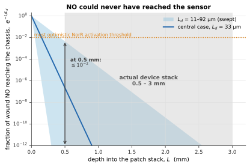</div>
    <figcaption><span class="fid">Figure&#160;1.</span> Across the whole swept parameter range,
    NO arriving at the chassis is 10<sup>&#8722;2</sup> to 10<sup>&#8722;7</sup> of wound NO at
    1&#160;mm &#8212; far below any plausible NorR activation threshold.
    <span class="caveat">The converse bound points the same way: measured in&#160;vivo wound NO
    (~3.18&#160;&#181;M) sits above the promoter's likely half-activation constant, so had NO
    reached the chassis the promoter would have been saturated and effectively always-on.
    Either way the design had no usable dynamic range.</span>
    <span class="src">fig01_no_attenuation.py</span></figcaption>
  </figure>

  <figure>
    <div class="figbox">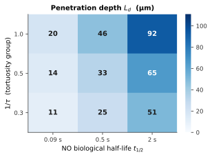</div>
    <figcaption><span class="fid">Figure&#160;2.</span> The conclusion is not a parameter
    choice. L<sub>d</sub> stays between 65 and 217&#160;&#181;m everywhere in the swept box,
    an order of magnitude below the thinnest stack we could have built.
    <span class="src">fig02_ld_heatmap.py</span></figcaption>
  </figure>

  <div class="col">
  <p>So the sensing branch was removed and the equations relocated rather than deleted: the
  two-layer transport operator was reused for Model&#160;1, and the expression and secretion
  kinetics became an upstream production model for recombinant V14 and FGF2-G3. What the
  device lost in cleverness it gained in a design we can actually defend.</p>
  </div>
</section>

<!-- ================= ACT 2 ================= -->
<section class="act wrap" id="act2">
  <div class="act-head"><div class="num">02</div><div>
    <p class="eyebrow">Models 1 and 2</p>
    <h2>What the patch actually delivers</h2>
  </div></div>

  <div class="claim warn">
    <h3>This is a bolus, not a sustained release &#8212; and the two molecules do not arrive together</h3>
    <p>V14 reaches 95&#160;% release in 14.5&#160;minutes and FGF2-G3 in 41&#160;minutes from a
    500&#160;&#181;m gel, against a wound-closure timescale of 7&#8211;21 days. The 2.8&#215;
    gap between them is pure size difference: the heparin-free gel retains neither active.</p>
  </div>

  <figure class="wide">
    <div class="figbox">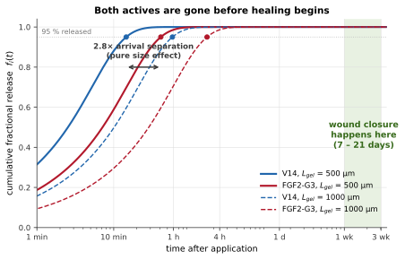</div>
    <figcaption><span class="fid">Figure&#160;3.</span> The empty space between the release
    curves and the closure window <i>is</i> the result: a timescale separation of roughly
    60&#8211;5000&#215;. <span class="caveat">Computed from the closed-form Crank series, so it
    carries no numerical error at all. Consequence for the assay: sample on a log grid from
    ~5&#160;min &#8212; hourly sampling would miss the entire kinetics.</span>
    <span class="src">fig03_release.py</span></figcaption>
  </figure>

  <div class="col">
  <p>Three things follow, and we carry them forward explicitly rather than hiding them.
  First, the gel diffusivity is essentially unidentifiable from closure data and must be
  fitted from the release assay. Second, the model honestly predicts a <em>small</em> closure
  benefit for an unmodified gel &#8212; a prediction, not a modelling failure. Third, if
  release kinetics are to matter for efficacy at all, retention has to be
  <em>added</em>. Act&#160;3 asks what that would buy.</p>
  </div>

  <details class="math"><summary>The transport equations, and why porosity cancels</summary>
  <div class="inner">
    <p>All concentrations in this model are <b>interstitial</b> &#8212; mol per cm&#179; of pore
    fluid. Conservation over a porous medium with superficial flux
    <i>N</i>&#160;=&#160;&#8722;&#949;D<sub>p</sub>&#8706;<sub>x</sub>C gives
    &#8706;<sub>t</sub>(&#949;C)&#160;=&#160;&#8706;<sub>x</sub>(&#949;D<sub>p</sub>&#8706;<sub>x</sub>C),
    so for uniform porosity &#949; <b>cancels and never appears inside a PDE</b>. V2 applied it
    twice, once in the diffusivity and again implicitly in the concentration basis, which
    under-predicts spreading.</p>
    <div class="eq">D_eff,i = D_0,i &#183; H(a_i, &#958;) / &#964;
&#160;&#160;&#160;&#160;H = exp[ &#8722;&#960; ( (a_i + a_f) / (&#958; + 2a_f) )&#178; ]
&#160;&#160;&#160;&#160;&#964; = &#949;^(&#8722;1/2)   (Bruggeman closure, replaced by a fitted &#964; at the first opportunity)</div>
    <p>Porosity enters in exactly two places: interfacial flux matching, and converting loaded
    mass to concentration. At &#958;&#160;=&#160;10&#160;nm this gives
    D<sub>eff</sub>&#160;=&#160;3.25&#215;10<sup>&#8722;6</sup> (V14) and
    1.15&#215;10<sup>&#8722;6</sup>&#160;cm&#178;s<sup>&#8722;1</sup> (FGF2-G3).</p>
    <div class="eq">gel:     &#8706;C&#7495;/&#8706;t = D_eff&#7495; &#8706;&#178;C&#7495;/&#8706;x&#178; &#8722; k_deg&#7495; C&#7495;        0 &lt; x &lt; L_gel
tissue:  &#8706;C&#7511;/&#8706;t = D_eff&#7511; &#8706;&#178;C&#7511;/&#8706;x&#178; &#8722; k_prot C&#7511;      &#8722;L_tis &lt; x &lt; 0

&#8706;C&#7495;/&#8706;x|_Lgel = 0                    impermeable backing
C&#7495;(0,t) = K_p C&#7511;(0,t)              partition at the interface
&#949;&#7495; D&#7495; &#8706;C&#7495;/&#8706;x|_0&#8314; = &#949;&#7511; D&#7511; &#8706;C&#7511;/&#8706;x|_0&#8315;    flux matching, per total area
C&#7511;(&#8722;L_tis, t) = 0                  systemic sink at the dermal base</div>
    <p>Four spatial conditions for two coupled second-order domains, solved monolithically.
    Clearance is distributed <em>or</em> imposed at the deep boundary, never both &#8212; they
    represent the same physics, and V2 imposed both, suppressing the tissue concentration twice.</p>
  </div></details>

  <div class="claim">
    <h3>The solver is verified before any result is reported</h3>
    <p>Second-order spatial convergence against a closed-form benchmark, and the analytic
    Fisher&#8211;KPP front speed reproduced to 1.8&#8211;6.2&#160;%.</p>
  </div>

  <figure class="wide">
    <div class="figbox">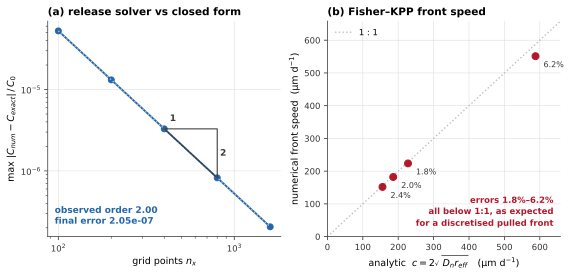</div>
    <figcaption><span class="fid">Figure&#160;4.</span> Left: the error falls by exactly
    4&#215; per grid refinement. Right: numerical front speeds sit consistently just
    <i>below</i> the analytic line, which is the expected behaviour of a discretised pulled
    front rather than a bug. <span class="caveat">The release problem has a corner singularity
    at (x,t)&#160;=&#160;(0,0) &#8212; loaded gel against a perfect sink &#8212; where
    &#8706;C/&#8706;x diverges as t<sup>&#8722;1/2</sup>. Crank&#8211;Nicolson rings there, so
    the solver uses Rannacher startup; integrating the release flux on a uniform time grid
    over-counts early release several-fold.</span>
    <span class="src">fig04_verification.py</span></figcaption>
  </figure>

  <figure class="wide">
    <div class="figbox">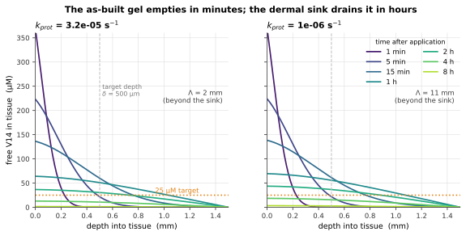</div>
    <figcaption><span class="fid">Figure&#160;5.</span> Where the drug actually is. The
    penetration depth &#923; and the proteolysis rate, not the gel, set how long tissue stays
    above target. <span class="caveat">Shown at R<sub>V</sub>&#160;=&#160;10 and the solubility
    ceiling. The macrophage target sits in a thin surface band where concentration is always
    above the depth average, so days-above-target computed this way is a lower bound.</span>
    <span class="src">fig05_tissue_profiles.py</span></figcaption>
  </figure>

  <figure>
    <div class="figbox">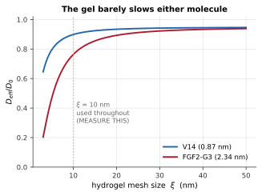</div>
    <figcaption><span class="fid">Figure&#160;6.</span> Steric hindrance is mild for V14 and
    only moderate for FGF2-G3: the gel is not a rate-controlling barrier.
    <span class="caveat">Mesh size &#958; is assumed, not measured &#8212; it is the cheapest
    remaining uncertainty in Models&#160;1&#8211;2.</span>
    <span class="src">fig06_hindrance.py</span></figcaption>
  </figure>
</section>

<!-- ================= ACT 3 ================= -->
<section class="act wrap" id="act3">
  <div class="act-head"><div class="num">03</div><div>
    <p class="eyebrow">Models 6 and 7 &#183; the design envelope</p>
    <h2>What we told the wet lab to change</h2>
  </div></div>

  <div class="claim gold">
    <h3>Retention has an optimum, not a maximum &#8212; and we expected the opposite</h3>
    <p>Because retention works by binding, the free concentration that drives delivery is
    C<sub>total</sub>/R<sub>V</sub>. Residence time is bought and driving concentration is spent
    in exact proportion. Past R<sub>V</sub>&#160;&#8776;&#160;30 the tissue concentration never
    reaches the therapeutic target at all and coverage collapses to <b>zero</b>.</p>
  </div>

  <figure class="wide">
    <div class="figbox">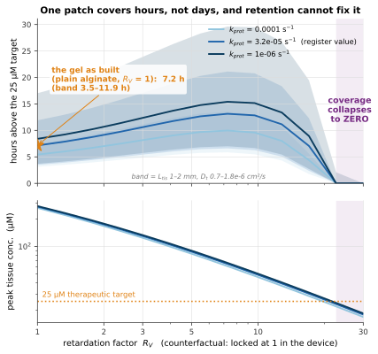</div>
    <figcaption><span class="fid">Figure&#160;7.</span> The headline design result. The lower
    panel explains the upper one: peak tissue concentration falls as 1/R<sub>V</sub>, and once
    it crosses the target the duration is zero by definition.
    <span class="caveat">The band spans L<sub>tis</sub>&#160;=&#160;2&#8211;4&#160;mm and
    D<sub>t</sub>&#160;=&#160;0.7&#8211;1.8&#215;10<sup>&#8722;6</sup>&#160;cm&#178;s<sup>&#8722;1</sup>,
    the two parameters we only know as ranges. The <i>location</i> of the optimum and the
    collapse are robust to both; the absolute number of days is not, and we do not claim it is.</span>
    <span class="src">fig07_retention.py</span></figcaption>
  </figure>

  <div class="col">
  <p>Two consequences reorder our design priorities. <b>Protease resistance outranks hydrogel
  functionalisation</b>: improving k<sub>prot</sub> by two decades roughly triples coverage and
  costs nothing in loading capacity, whereas retention trades one against the other. And
  heparin cannot help V14 at all &#8212; it is strongly anionic, V14 carries net charge
  &#8722;2 with no Lys, Arg or His, so it is electrostatically repelled. The two arms need
  different chemistry.</p>
  </div>

  <figure class="wide">
    <div class="figbox">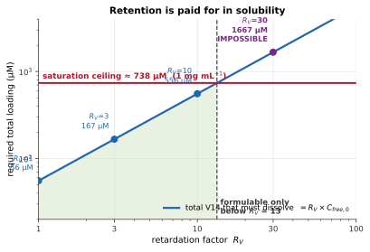</div>
    <figcaption><span class="fid">Figure&#160;8.</span> The same optimum, reached from an
    independent direction. A 25&#160;&#181;M target at 1&#160;mm depth needs
    <b>55.6&#160;&#181;M free</b> (75&#160;&#181;g&#160;mL<sup>&#8722;1</sup>) &#8212; but
    556&#160;&#181;M <i>total</i> at R<sub>V</sub>&#160;=&#160;10, which is 75&#160;% of the
    solubility ceiling, and 1.67&#160;mM at R<sub>V</sub>&#160;=&#160;30, which exceeds it
    outright. <span class="caveat">Two routes converging on R<sub>V</sub>&#160;&#8776;&#160;3&#8211;10
    is why we believe the result. Solubility, not potency, is the binding constraint on the
    whole device.</span> <span class="src">fig08_solubility.py</span></figcaption>
  </figure>

  <div class="claim warn">
    <h3>A treatment that falls short does not merely stall &#8212; the wound reopens</h3>
    <p>When the drug effect fades and r<sub>eff</sub> returns negative, the steady state behind
    the front, n<sub>ss</sub>&#160;=&#160;K(1&#160;&#8722;&#160;d/r<sub>p</sub>), becomes zero.
    The repopulated tissue dies back and the front recedes past where it started. This is both
    a recognisable clinical picture in chronic wounds and a falsifiable prediction.</p>
  </div>

  <figure class="wide">
    <div class="figbox">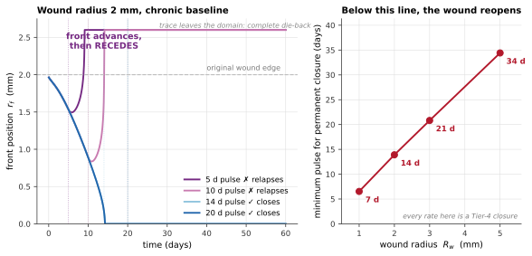</div>
    <figcaption><span class="fid">Figure&#160;9.</span> Left: a 5-day pulse produces transient
    apparent healing followed by complete relapse. Right: the minimum pulse grows roughly
    linearly with wound radius. <span class="caveat">The model describes a chronic wound bed, so
    it is not run past closure &#8212; t<sub>c</sub> is defined as the first time the front
    reaches the centre. Every rate in this figure is a Tier-4 phenomenological closure with no
    planned experiment behind it.</span> <span class="src">fig09_recession.py</span></figcaption>
  </figure>

  <div class="col">
  <p>Joining the two halves gives the model's first genuinely end-to-end statement &#8212;
  loaded dose through to healing outcome &#8212; and it is a <em>device specification</em>:</p>
  </div>

  <figure class="wide">
    <div class="figbox">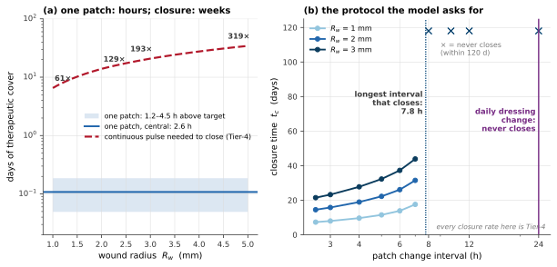</div>
    <figcaption><span class="fid">Figure&#160;10.</span> One patch closes wounds up to roughly
    <b>2.5&#160;mm radius</b>; everything larger needs replacement at ~11-day intervals, which
    is within normal wound-dressing practice and is therefore a specification rather than an
    obstacle. <span class="caveat">The range is wide &#8212; 1.0 to 5.0&#160;mm &#8212; because
    the supply band carries the L<sub>tis</sub> and D<sub>t</sub> uncertainty of Figure&#160;7
    and the demand curve rests entirely on Tier-4 closures. The <i>structure</i> of the result
    (a bounded coverage window, an optimum in R<sub>V</sub>, a wound size above which repeat
    dosing is mandatory) is robust; the absolute radius is not.</span>
    <span class="src">fig10_envelope.py</span></figcaption>
  </figure>

  <p class="col">Repeat dosing is not a fallback for a device that failed to achieve sustained
  release. On these numbers it is <b>structural</b>, and the model sets the interval.</p>
</section>

<!-- ================= ACT 4 ================= -->
<section class="act wrap" id="act4">
  <div class="act-head"><div class="num">04</div><div>
    <p class="eyebrow">Models 3 to 5 &#183; identifiability and uncertainty</p>
    <h2>Where the model meets data, and where it doesn't</h2>
  </div></div>

  <div class="claim">
    <h3>The V14 arm runs before any affinity is measured</h3>
    <p>In the scaled variables &#968;&#160;=&#160;C<sub>V</sub>/K<sub>D,P</sub> and
    a&#160;=&#160;[L]/K<sub>D,L</sub>, fourteen parameters collapse to four, and half-maximal
    suppression sits at <b>&#968;<sub>50</sub>&#160;=&#160;1&#160;+&#160;a exactly</b> &#8212;
    no fitted constant anywhere. Measuring K<sub>D,P</sub> rescales the axis. It calibrates the
    model rather than unblocking it.</p>
  </div>

  <figure class="wide">
    <div class="figbox">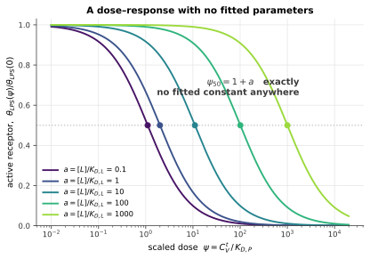</div>
    <figcaption><span class="fid">Figure&#160;11.</span> A dose&#8211;response with no fitted
    parameters. The marked points are exact, and they double as a closed-form check on any
    numerical implementation of Models&#160;3&#8211;4.
    <span class="src">fig11_universal_dose.py</span></figcaption>
  </figure>

  <figure class="wide">
    <div class="figbox">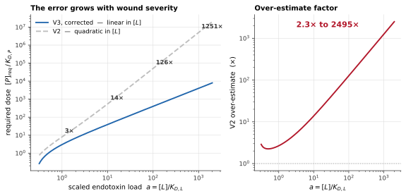</div>
    <figcaption><span class="fid">Figure&#160;12.</span> Inverting for the dose requires
    isolating &#968; <i>additively</i>; V2 factored out K<sub>D</sub><sup>app</sup>, which is
    legitimate in the occupancy expression and in Cheng&#8211;Prusoff but not here. The
    <b>scaling law</b> was wrong, not just the prefactor &#8212; so V2 mispredicted exactly the
    quantity it claimed to deliver. <span class="src">fig12_dose_correction.py</span></figcaption>
  </figure>

  <div class="claim gold">
    <h3>The Griess assay measures accumulated nitrite, not free NO</h3>
    <p>The two differ by three to four orders of magnitude. Fitting the model's instantaneous
    free-NO expression to a Griess curve compares two different quantities &#8212; so the
    integral, not the quasi-steady concentration, is what gets fitted.</p>
  </div>

  <figure class="wide">
    <div class="figbox">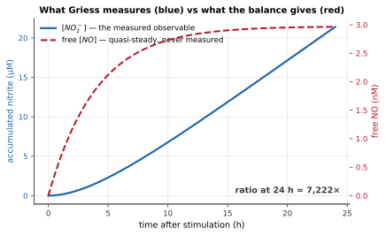</div>
    <figcaption><span class="fid">Figure&#160;14.</span> Free NO is quasi-steady within seconds
    (1/k<sub>scav</sub>&#160;&#8776;&#160;4&#8211;14&#160;s) and sits at nanomolar; nitrite
    accumulates all day and reaches micromolar. <span class="caveat">This is also how we caught
    that V2's per-cell iNOS rate was ~10<sup>4</sup>&#215; too high: it produced a
    plausible-looking steady-state NO concentration only because the scavenging term acts on
    free NO while the literature values it was matched against are nitrite.</span>
    <span class="src">fig14_no_vs_nitrite.py</span></figcaption>
  </figure>

  <figure class="wide">
    <div class="figbox">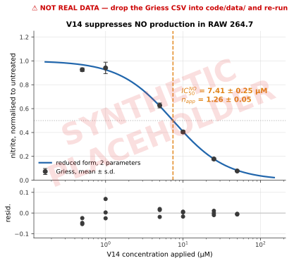</div>
    <figcaption><span class="fid">Figure&#160;13.</span> <b>Placeholder &#8212; awaiting the
    measured Griess curve.</b> The fitting routine is written and tested against synthetic data;
    supplying the measured CSV yields IC<sub>50</sub><sup>NO</sup> and n<sub>app</sub>
    immediately. <span class="caveat">Only those two parameters may be reported. The mechanistic
    chain from V14 concentration to nitrite carries at least fourteen parameters against a
    sigmoid with roughly three degrees of freedom, so the internal constants are not identifiable
    from this dataset and we do not fit them.</span>
    <span class="src">fig13_nitrite_fit.py</span></figcaption>
  </figure>

  <h3 class="col">What actually drives the answers</h3>
  <p class="col">Morris screening followed by Sobol indices over the full joint prior. The
  analysis refuted two of our own predictions, which we think is the most useful thing it did.</p>

  <figure class="wide">
    <div class="figbox">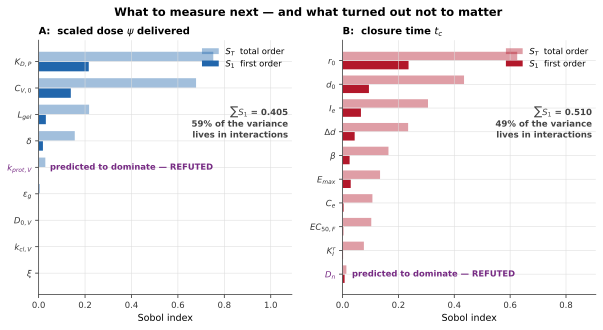</div>
    <figcaption><span class="fid">Figure&#160;15.</span> We expected k<sub>prot,V</sub> to
    dominate delivery and D<sub>n</sub> to dominate closure. Both are <b>refuted</b> by the
    computed indices. <span class="caveat">Two caveats we would rather state than have a reader
    find. A Sobol ranking reflects prior width as well as physics, and K<sub>D,P</sub> and
    C<sub>V,0</sub> carry the widest ranges. And variance is not leverage: k<sub>prot,V</sub>
    carries little output variance yet remains the parameter we can most profitably
    <i>act</i> on, because improving it costs nothing in loading capacity.</span>
    <span class="src">fig15_sobol.py &#183; sa_run.py</span></figcaption>
  </figure>

  <figure class="wide">
    <div class="figbox">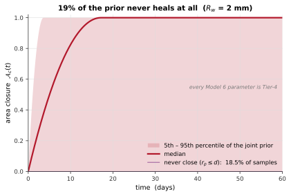</div>
    <figcaption><span class="fid">Figure&#160;16.</span> Under the current priors
    <b>18.7&#160;% of sampled wounds never close at all</b>. That is the strongest available
    argument for keeping the death term: a model without it would have returned a finite closure
    time for every one of those samples. <span class="caveat">A statement about the prior, not a
    prediction about any particular wound.</span>
    <span class="src">fig16_uncertainty.py</span></figcaption>
  </figure>

  <figure>
    <div class="figbox">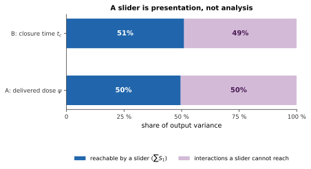</div>
    <figcaption><span class="fid">Figure&#160;17.</span> A one-parameter-at-a-time sweep is
    exactly what a slider performs, and it reaches only the first-order variance. For delivered
    dose that is 37&#160;%; the other 63&#160;% lives in interactions a slider cannot reach.
    <span class="caveat">Our interactive explorer is presentation, not analysis. This is a
    measured deficit, not a stylistic preference.</span>
    <span class="src">fig17_slider.py</span></figcaption>
  </figure>

  <figure class="wide">
    <div class="figbox">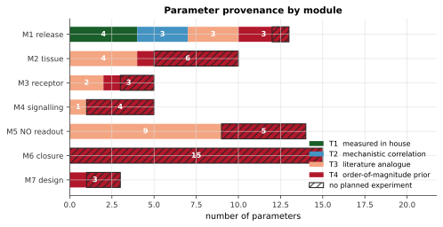</div>
    <figcaption><span class="fid">Figure&#160;18.</span> Models&#160;1&#8211;2 stand on
    sequence-derived and geometric parameters. Model&#160;6 is entirely Tier-4 and entirely
    unplanned &#8212; the bar says so without anyone having to read an appendix.
    <span class="src">fig18_provenance.py</span></figcaption>
  </figure>

  <h3 class="col">What we declared non-identifiable and did not fit</h3>
  <div class="tablewrap"><table>
    <thead><tr><th>Combination</th><th>Why it cannot be recovered</th><th>What would break it</th></tr></thead>
    <tbody>
      <tr><td><b>D<sub>n</sub> &#183; r<sub>eff</sub></b></td>
        <td>They enter the front speed only as a product, so a fourfold rise in either produces the same doubling of c.</td>
        <td>Scratch assay &#177; mitomycin C; or report front width, since c&#183;w<sub>f</sub> &#8733; D<sub>n</sub> and c/w<sub>f</sub> &#8733; r<sub>eff</sub>.</td></tr>
      <tr><td><b>r<sub>p</sub> &#8722; d</b></td>
        <td>Only the difference appears in the front speed. The death term is kept for a structural reason, not a fitted one.</td>
        <td>Independent proliferation and apoptosis measurements &#8212; or sweep it. Never fit it to closure data.</td></tr>
      <tr><td><b>the NO chain constants</b></td>
        <td>&#8805;14 parameters against a ~3-d.o.f. sigmoid.</td>
        <td>Nothing cheap. Fit the reduced two-parameter form and report only that.</td></tr>
      <tr><td><b>K<sub>D,P</sub></b></td>
        <td>The assay returns IC<sub>50</sub> = K<sub>D,P</sub>(1 + [L]/K<sub>D,L</sub>), so without [L] it is K<sub>D</sub><sup>app</sup>.</td>
        <td>Two or three LPS concentrations. <i>Ratios</i> between variants are already identifiable at fixed [L], so the variant screen works as planned.</td></tr>
    </tbody>
  </table></div>
  <p class="col">Naming these makes the model more credible, not less. It is also why the
  quantities we <em>do</em> report can be relied on.</p>
</section>

<!-- ================= WRONG ================= -->
<section class="act wrap" id="wrong">
  <div class="act-head"><div class="num">05</div><div>
    <p class="eyebrow">Iteration</p>
    <h2>What running the model changed about the model</h2>
  </div></div>
  <p class="col">Executing V3 contradicted five of its own written claims and refuted two of
  its own predictions. We record them because a model that never contradicts its author has
  probably not been run.</p>

  <ol class="corr">
    <li><b>The planar closure estimate is a lower bound, not an upper bound.</b> Curvature does
    accelerate the front, by 5&#8211;21&#160;% relative to Cartesian &#8212; but the formula
    R<sub>w</sub>/c neglects the time to <i>form</i> the travelling front, and that transient
    outweighs the curvature gain. Radial closure exceeds R<sub>w</sub>/c by 4&#8211;15&#160;%.</li>

    <li><b>The far-field boundary condition fails exactly where the device works.</b> A zero-flux
    deep boundary needs L<sub>tis</sub>&#160;&#8811;&#160;&#923;, but &#923; is 1.2&#160;mm at
    k&#160;=&#160;10<sup>&#8722;4</sup>&#160;s<sup>&#8722;1</sup> and 12&#160;mm at
    10<sup>&#8722;6</sup>, against a dermis of 1&#8211;4&#160;mm. V3 therefore uses a Dirichlet
    systemic sink, with no distributed clearance term as well.</li>

    <li><b>The Jensen gap was quoted at 15&#160;%; recomputed for this geometry it is
    0.2&#8211;36&#160;%, median 2.7&#160;%.</b> The inherited figure was neither typical nor an
    upper bound. The gap is small in most of the parameter space but reaches 36&#160;% in the
    corner that matters most, and it is always in the optimistic direction.</li>

    <li><b>Retention has an optimum, not a maximum.</b> We wrote it up as a lever to be
    maximised. Running the coupled solve showed R<sub>V</sub>&#160;&#8805;&#160;30 gives zero
    days above target.</li>

    <li><b>A sub-threshold pulse causes relapse, not stalling.</b> We had assumed a transient
    crossing of the r<sub>p</sub>&#160;&gt;&#160;d threshold would simply fail to finish. It
    reverses.</li>
  </ol>

  <div class="col">
  <p>One modelling error was caught during solver verification and is recorded because it is
  easy to repeat: <b>with retention, the loaded concentration must be interpreted as total
  (free&#160;+&#160;bound)</b>, so the free initial concentration is
  C<sub>total</sub>/R<sub>V</sub>. Treating the loading as free silently loads R<sub>V</sub>
  times more drug than solubility allows and over-predicts sustained release by orders of
  magnitude.</p>
  </div>
</section>

<!-- ================= ASKS ================= -->
<section class="act wrap" id="asks">
  <div class="act-head"><div class="num">06</div><div>
    <p class="eyebrow">Model &#8594; wet lab</p>
    <h2>What we asked for, in priority order</h2>
  </div></div>
  <p class="col">The model's job is to change what the lab does next. These are the requests
  it generated, ranked by what they unblock rather than by how hard they are.</p>

  <ul class="asks">
    <li><span class="st">&#9633;</span><div><b>V14 stability in serum or with recombinant MMP-9 / neutrophil elastase, by HPLC.</b>
      Fixes k<sub>prot,V</sub>, which Act&#160;3 identifies as the dominant <i>design</i> lever
      &#8212; it outranks gel functionalisation and costs nothing in loading capacity. One day of work.</div></li>
    <li><span class="st">&#9633;</span><div><b>Saturation solubility of V14 in the casting buffer.</b>
      Sets C<sub>total,0</sub>, the binding constraint on the entire sustained-release envelope.
      Trivial, cheap, and currently unplanned.</div></li>
    <li><span class="st">&#9633;</span><div><b>Run the release assay against a RAW&#160;264.7 layer rather than a stirred bath.</b>
      Every planned experiment probes one module in isolation, so a seam error &#8212; a wrong
      interface value, a wrong porosity convention at the flux match &#8212; would pass all of
      them and still break the integrated prediction. This one test spans Models&#160;1,&#160;3
      and&#160;5 at once.</div></li>
    <li><span class="st">&#9633;</span><div><b>The same release assay for FGF2-G3.</b>
      Every FGF gel parameter is otherwise unconstrained, and it tests the predicted
      2.8&#215; arrival separation directly.</div></li>
    <li><span class="st">&#9633;</span><div><b>Scratch assay on fibroblasts &#177; FGF2-G3, &#177; mitomycin C, reporting front width.</b>
      One assay that supplies an otherwise entirely unsupported module and breaks the
      D<sub>n</sub>&#160;/&#160;r<sub>p</sub> degeneracy.</div></li>
    <li><span class="st">&#9633;</span><div><b>Two or three LPS concentrations in the existing flow-cytometry panel.</b>
      Without them K<sub>D,P</sub> is not recoverable &#8212; only K<sub>D</sub><sup>app</sup>.
      Also run a Schild analysis: a depressed maximum would invalidate the competitive mechanism
      the whole V14 arm assumes.</div></li>
    <li><span class="st">&#9633;</span><div><b><i>Nos2</i> as one of the two pro-inflammatory qPCR markers.</b>
      It is the only marker that parameterises an equation already in the model.</div></li>
    <li><span class="st">&#9633;</span><div><b>Sample the release assay on a log grid from ~5&#160;min.</b>
      Release is ~95&#160;% complete in tens of minutes; hourly sampling would miss the entire
      kinetics.</div></li>
  </ul>

  <p class="col"><b>One limitation we cannot design away.</b> If FGF2 is assayed on fibroblasts
  while V14 is assayed on RAW&#160;264.7, the two arms are validated in different cell systems
  and can never be validated <em>jointly</em> in&#160;vitro. A co-culture or sequential
  conditioned-medium experiment is the one that would test the combination claim itself.</p>
</section>

<!-- ================= CODE ================= -->
<section class="act wrap" id="code">
  <div class="act-head"><div class="num">07</div><div>
    <p class="eyebrow">Reproducibility</p>
    <h2>Every figure, from source</h2>
  </div></div>

  <div class="ref-banner">
    <span class="tag">Team reference &#183; not a judged deliverable</span>
    <p>This section exists so anyone on the team &#8212; or anyone reading this page &#8212;
    can check a number rather than take it on trust. Every figure above is produced by exactly
    one script below, named in its caption. The whole package depends on nothing but
    <code>numpy</code>, <code>scipy</code> and <code>matplotlib</code>.</p>
  </div>

  <a class="dl" href="assets/igem2026-hku-dry-lab-model-code.zip" download>
    &#8595;&#160;&#160;Download the full code bundle (.zip)</a>

  <div class="col">
  <p style="font-size:.92rem;color:var(--ink-2)">Run <code>python3 verify.py</code> first. It
  must print <b>ALL CHECKS PASSED</b> &#8212; it checks the release solver against the
  closed-form Crank series, the Fisher&#8211;KPP solver against the analytic front speed, and
  the two-domain solver four ways &#8212; before any number here is quoted anywhere. Then
  <code>python3 make_figures.py</code> regenerates every figure into <code>assets/</code>.</p>
  </div>

  <div class="filelist"><div class="filecard"><div class="fn">params.py</div><div class="fd">Every parameter, with its provenance tier. The single source of truth.</div></div>
<div class="filecard"><div class="fn">v3model.py</div><div class="fd">Transport coefficients, Crank series, release solver, occupancy and dose inversion, NO readout, Fisher&#8211;KPP.</div></div>
<div class="filecard"><div class="fn">twodomain.py</div><div class="fd">Monolithic gel + tissue solver: partition, flux matching, Dirichlet systemic sink.</div></div>
<div class="filecard"><div class="fn">sa_run.py</div><div class="fd">Morris screening and Sobol indices, implemented directly.</div></div>
<div class="filecard"><div class="fn">verify.py</div><div class="fd">The regression suite. Run this first.</div></div>
<div class="filecard"><div class="fn">make_figures.py</div><div class="fd">Regenerates every figure into assets/.</div></div>
<div class="filecard"><div class="fn">style.py</div><div class="fd">The shared visual system &#8212; colour semantics and line-style meanings.</div></div><div class="filecard"><div class="fn">figures/fig01 &#8230; fig18</div><div class="fd">One script per figure, named in that figure's caption. Run any of them on its own.</div></div></div>

  <h3>Browse the source</h3>
  <p style="font-size:.9rem;color:var(--ink-2);max-width:var(--measure)">Expand any file to read
  it here, or use the copy button.</p>
  <details class="code"><summary><span>params.py</span><span class="meta">88 lines &#183; params.py -- the single source of truth for every parameter used in the </span></summary><div style="padding:9px 15px 0;text-align:right"><button class="copybtn" type="button">copy</button></div><pre><code>&quot;&quot;&quot;
params.py -- the single source of truth for every parameter used in the figures.

No value is hard-coded inside a solver; everything enters through this file, so
changing a number here changes every figure that depends on it.  Each entry
carries its provenance TIER, following Appendix &quot;Parameter provenance&quot;:

    T1  measured in house
    T2  mechanistic correlation
    T3  named literature analogue, matching criterion stated
    T4  order-of-magnitude prior (&gt;= 1 decade)

Units: cm, s, mol cm^-3.  1 uM = 1e-9 mol cm^-3.
&quot;&quot;&quot;

UM = 1e-9
DAY = 86400.0

# --- geometry ---------------------------------------------------------------
L_GEL        = 0.1      # cm   (1 mm) gel thickness                       design
L_GEL_THIN   = 500e-4   # cm   (500 um) thin-gel case                     design
L_TIS        = 0.3      # cm   (3 mm) dermal depth to the systemic sink   T3
DELTA        = 0.1      # cm   (1 mm) fibroblast-active / target depth    T4 (choice)
R_W_DEFAULT  = 0.5      # cm   (5 mm) wound radius                        design

# --- transport --------------------------------------------------------------
D0_V14       = 3.6e-6   # cm2/s free-solution diffusivity, 37 C           T2
D0_FGF       = 1.5e-6   # cm2/s                                           T2
A_V14_NM     = 0.87     # nm   hydrodynamic radius                        T2
A_FGF_NM     = 2.34     # nm                                              T2
A_FIBRE_NM   = 0.6      # nm   gelatin chain radius                       T3
XI_NM        = 10.0     # nm   mesh size (range 5-50 swept)               T3
EPS_GEL      = 0.90     # --   10% w/v GelMA at equilibrium hydration     T3
EPS_TIS      = 0.20     # --   tissue interstitial volume fraction        T3
K_P          = 1.0      # --   gel/tissue partition coefficient           T4
D_TIS_V14    = 1.2e-6   # cm2/s tissue diffusivity (range 0.7-1.8e-6)     T2
D_TIS_V14_LO = 0.7e-6
D_TIS_V14_HI = 1.8e-6

# --- loss rates -------------------------------------------------------------
K_DEG_GEL    = 1e-5     # 1/s  in-gel degradation (1e-5 to 1e-4)          T4
K_PROT_V14   = 1e-5     # 1/s  tissue proteolysis -- HIGHEST-PRIORITY GAP T4
K_PROT_RANGE = (1e-4, 1e-5, 1e-6)

# --- dosing -----------------------------------------------------------------
C_TARGET_V14 = 25 * UM     # mol/cm3  efficacious tissue concentration    T4
C_SOLUBILITY = 738 * UM    # mol/cm3  1 mg/mL saturation ceiling          T4 -- MEASURE THIS
MW_V14       = 1355.59     # Da
F_REL        = 0.5         # --  fraction of loaded dose released         T4

# --- nitric oxide (Learning Cycle 1) ---------------------------------------
D0_NO        = 3.3e-5   # cm2/s                                           T3
NO_HALFLIFE  = (3.0, 5.0, 10.0)   # s, report as a RANGE: autoxidation is
                                  # second order, so t_1/2 is concentration
                                  # dependent                             T3
INV_TAU      = (1.0, 0.5, 0.3)    # swept group 1/tau                     T2

# --- closure (Model 6) -- every entry here is Tier 4 ------------------------
D_N          = 1e-9     # cm2/s fibroblast random motility                T4
D_N_RANGE    = (1e-10, 1e-8)
R0           = 1.0 / DAY   # 1/s basal proliferation                      T4
D0_DEATH     = 0.3 / DAY   # 1/s basal death                              T4
K_CARRY      = 1.0         # normalised carrying capacity
W_SMOOTH     = 75e-4       # cm  IC smoothing width (50-100 um)

# chronic baseline and therapeutic pulse used in the durability section
R_CHRONIC    = 0.8 / DAY
D_CHRONIC    = 1.0 / DAY
R_PULSE      = 2.0 / DAY
D_PULSE      = 0.4 / DAY
TAU_RELAX    = 0.5 * DAY   # s, drug-effect relaxation time constant

# --- receptor / signalling --------------------------------------------------
A_LPS        = 10.0     # --  scaled endotoxin load [L]/KD_L              T4
GAMMA        = 10.0     # --  scaled receptor density                     T4
HILL_H       = 1.5      # --                                              T4
PSI_RANGE    = (1e-2, 1e4)

PROVENANCE = {
    # module: (T1, T2, T3, T4, no_planned_experiment)
    &quot;M1 release&quot;:      dict(T1=2, T2=4, T3=3, T4=2, unplanned=1),
    &quot;M2 tissue&quot;:       dict(T1=0, T2=3, T3=2, T4=4, unplanned=3),
    &quot;M3 receptor&quot;:     dict(T1=1, T2=0, T3=0, T4=3, unplanned=2),
    &quot;M4 signalling&quot;:   dict(T1=0, T2=0, T3=0, T4=5, unplanned=4),
    &quot;M5 NO readout&quot;:   dict(T1=1, T2=0, T3=2, T4=3, unplanned=2),
    &quot;M6 closure&quot;:      dict(T1=0, T2=0, T3=0, T4=11, unplanned=11),
}
</code></pre></details>
<details class="code"><summary><span>v3model.py</span><span class="meta">442 lines &#183; v3model.py -- reference implementation of Mathematical Model V3.</span></summary><div style="padding:9px 15px 0;text-align:right"><button class="copybtn" type="button">copy</button></div><pre><code>&quot;&quot;&quot;
v3model.py -- reference implementation of Mathematical Model V3.

HKU iGEM 2026, Dry Lab.  TEAM REFERENCE COPY: this module exists so that every
number and every curve on the Modelling wiki page can be regenerated from
source by anyone on the team.  It is deliberately dependency-light
(numpy + scipy only) and deliberately un-clever: readability beats speed here,
because the point is that a teammate can check the maths against the equation
reference document line by line.

Contents
--------
Transport coefficients   amsden_H, D_eff
Model 1 (release)        crank_profile, crank_cumulative, release_time,
                         ReleaseSolver (method of lines, perfect sink)
Model 3-4 (signalling)   theta_inhib, theta_lps, p65, psi_50, dose_required,
                         dose_required_v2
Model 5 (NO readout)     inos_response, nitrite_reduced
Model 6 (closure)        FisherKPP (radial + Cartesian), front_speed,
                         coupling_rp, coupling_d
Model 7 (design)         loading_required

Units are CGS throughout: cm, s, mol cm^-3.  Concentrations are INTERSTITIAL
(mol per cm^3 of pore fluid), per Section 1.3 of the equation reference --
porosity never appears inside a PDE.

Convenience: 1 uM = 1e-9 mol/cm^3.
&quot;&quot;&quot;

import numpy as np
from scipy.sparse import diags, identity, csc_matrix
from scipy.sparse.linalg import splu

UM = 1e-9          # 1 micromolar, in mol cm^-3
DAY = 86400.0      # s
MIN = 60.0


# =============================================================================
# Transport coefficients  (equation reference, Section 1)
# =============================================================================

def amsden_H(a_solute_nm, xi_nm, a_fibre_nm=0.6):
    &quot;&quot;&quot;
    Amsden obstruction-scaling steric hindrance factor.

        H = exp[ -pi ( (a + a_f) / (xi + 2 a_f) )^2 ],   0 &lt; H &lt;= 1

    a_solute_nm : solute hydrodynamic radius  (0.87 nm V14, 2.34 nm FGF2-G3)
    xi_nm       : hydrogel mesh size
    a_fibre_nm  : gelatin chain radius, ~0.6 nm
    &quot;&quot;&quot;
    a = np.asarray(a_solute_nm, dtype=float)
    xi = np.asarray(xi_nm, dtype=float)
    return np.exp(-np.pi * ((a + a_fibre_nm) / (xi + 2 * a_fibre_nm)) ** 2)


def D_eff(D0, a_solute_nm, xi_nm, porosity=0.91, a_fibre_nm=0.6):
    &quot;&quot;&quot;
    Pore (effective) diffusivity, D_eff = D0 * H / tau, with the Bruggeman
    closure tau = porosity^(-1/2).

    NOTE the porosity does *not* multiply the result again: it cancels out of
    the transient term (Eq. basis).  Applying it twice was the V2 error.
    &quot;&quot;&quot;
    H = amsden_H(a_solute_nm, xi_nm, a_fibre_nm)
    tau = porosity ** -0.5
    return D0 * H / tau


# =============================================================================
# Model 1 -- release from the hydrogel
# =============================================================================

def crank_profile(x, t, C0, D, L, k_deg=0.0, n_terms=400):
    &quot;&quot;&quot;
    Closed form for Fickian desorption from a plane sheet sealed on one face,
    perfect sink at x = 0 (Crank, Mathematics of Diffusion, 4.3.2):

        C(x,t) = C0 e^{-kt} sum_m 4/((2m+1)pi)
                 sin[(2m+1)pi x /2L] exp[-D(2m+1)^2 pi^2 t /4L^2]

    This is the designated regression test for the numerical solver.
    &quot;&quot;&quot;
    x = np.atleast_1d(np.asarray(x, float))
    t = np.atleast_1d(np.asarray(t, float))
    m = np.arange(n_terms)
    lam = (2 * m + 1) * np.pi / (2 * L)
    coef = 4.0 / ((2 * m + 1) * np.pi)
    # shape (nt, nx)
    S = np.einsum(&quot;m,xm,tm-&gt;tx&quot;,
                  coef,
                  np.sin(np.outer(x, lam)),
                  np.exp(-D * np.outer(t, lam ** 2)))
    return C0 * np.exp(-k_deg * t)[:, None] * S


def crank_cumulative(t, D, L, n_terms=2000):
    &quot;&quot;&quot;Cumulative fractional release M_t/M_inf (no degradation).&quot;&quot;&quot;
    t = np.atleast_1d(np.asarray(t, float))
    m = np.arange(n_terms)
    a = (2 * m + 1) ** 2 * np.pi ** 2
    coef = 8.0 / ((2 * m + 1) ** 2 * np.pi ** 2)
    S = np.einsum(&quot;m,tm-&gt;t&quot;, coef, np.exp(-D * np.outer(t, a) / (4 * L ** 2)))
    return 1.0 - S


def release_time(fraction, D, L, hi=None):
    &quot;&quot;&quot;Time at which cumulative fractional release reaches `fraction`.&quot;&quot;&quot;
    from scipy.optimize import brentq
    tau_late = 4 * L ** 2 / (np.pi ** 2 * D)
    hi = hi or tau_late * 50
    f = lambda t: crank_cumulative(np.array([t]), D, L)[0] - fraction
    return brentq(f, 1e-6, hi)


def tau_late(D, L):
    &quot;&quot;&quot;Late-time decay constant, 4L^2 / (pi^2 D).&quot;&quot;&quot;
    return 4 * L ** 2 / (np.pi ** 2 * D)


def damkohler(k_deg, L, D):
    &quot;&quot;&quot;Gel Damkohler number; &lt;&lt; 1 means release beats in-gel degradation.&quot;&quot;&quot;
    return k_deg * L ** 2 / D


def penetration_depth(D_tissue, k_loss):
    &quot;&quot;&quot;Tissue penetration depth Lambda = sqrt(D_t / k).&quot;&quot;&quot;
    return np.sqrt(D_tissue / k_loss)


class ReleaseSolver:
    &quot;&quot;&quot;
    Method-of-lines solver for the single-domain gel release problem with a
    perfect sink, used to verify second-order spatial convergence against
    crank_profile().

        dC/dt = D d2C/dx2 - k C,   C(0,t)=0,  dC/dx|_L = 0,  C(x,0)=C0

    Time integration is Crank-Nicolson with a fixed step, so the observed error
    is dominated by the spatial discretisation (that is the point: we are
    measuring the spatial order).
    &quot;&quot;&quot;

    def __init__(self, D, L, nx, k_deg=0.0):
        self.D, self.L, self.nx, self.k = D, L, nx, k_deg
        self.h = L / nx
        self.x = np.linspace(0, L, nx + 1)
        # unknowns: nodes 1..nx  (node 0 pinned at 0 by the sink)
        n = nx
        main = -2.0 * np.ones(n)
        main[-1] = -2.0                  # mirror node handles the zero-flux face
        lower = np.ones(n - 1)
        upper = np.ones(n - 1)
        A = diags([lower, main, upper], [-1, 0, 1], format=&quot;lil&quot;)
        A[n - 1, n - 2] = 2.0            # ghost-node reflection at x = L
        A = csc_matrix(A) * (D / self.h ** 2) - k_deg * identity(n, format=&quot;csc&quot;)
        self.A = csc_matrix(A)

    def solve(self, C0, times, dt, rannacher=4):
        &quot;&quot;&quot;
        Return C at the requested `times`, shape (len(times), nx+1).

        The initial data are discontinuous at the corner (x,t)=(0,0) -- loaded
        gel against a perfect sink -- so dC/dx|_0 diverges as t^-1/2 and plain
        Crank-Nicolson rings badly on fine grids.  We therefore use RANNACHER
        STARTUP: the first `rannacher` steps are taken with fully implicit
        (backward) Euler at half the step, which damps the high-frequency modes,
        after which CN resumes and recovers second order.  Without this the
        nx=1600 error is ~1e-3 instead of ~1e-7.
        &quot;&quot;&quot;
        n = self.nx
        I = identity(n, format=&quot;csc&quot;)
        lu_cn = splu(csc_matrix(I - 0.5 * dt * self.A))
        Rm = csc_matrix(I + 0.5 * dt * self.A)
        lu_be = splu(csc_matrix(I - 0.5 * dt * self.A))   # BE at half step

        C = np.full(n, float(C0))
        out, t, done = [], 0.0, 0
        for tt in np.atleast_1d(times):
            nsteps = int(round((tt - t) / dt))
            for _ in range(nsteps):
                if done &lt; rannacher:
                    C = lu_be.solve(lu_be.solve(C))   # two BE half-steps
                else:
                    C = lu_cn.solve(Rm @ C)
                done += 1
            t += nsteps * dt
            out.append(np.concatenate([[0.0], C]))
        return np.array(out)

    def retained_mass(self, C):
        &quot;&quot;&quot;Trapezoidal integral of C over the gel, per unit area.&quot;&quot;&quot;
        return np.trapezoid(C, self.x) if hasattr(np, &quot;trapezoid&quot;) \
            else np.trapz(C, self.x)


# =============================================================================
# Models 3 and 4 -- competitive occupancy, signalling, dose inversion
# =============================================================================

def theta_inhib(C_V, KD_P, L_lps, KD_L):
    &quot;&quot;&quot;Fraction of MD2 occupied by V14. C_V sits OUTSIDE the KD_P bracket.&quot;&quot;&quot;
    return C_V / (KD_P * (1 + L_lps / KD_L) + C_V)


def theta_lps(C_V, KD_P, L_lps, KD_L):
    &quot;&quot;&quot;Fraction of MD2 occupied by LPS -- the pro-inflammatory species.&quot;&quot;&quot;
    a = L_lps / KD_L
    return a / (1 + a + C_V / KD_P)


def theta_lps_scaled(psi, a):
    &quot;&quot;&quot;Non-dimensional form: only psi = C_V/KD_P and a = [L]/KD_L appear.&quot;&quot;&quot;
    return a / (1 + a + psi)


def suppression_ratio(psi, a):
    &quot;&quot;&quot;theta_LPS(psi)/theta_LPS(0) = (1+a)/(1+a+psi).  No fitted constants.&quot;&quot;&quot;
    return (1 + a) / (1 + a + psi)


def psi_50(a):
    &quot;&quot;&quot;Exact scaled dose for 50% suppression of active receptor: psi50 = 1 + a.&quot;&quot;&quot;
    return 1.0 + a


def p65_scaled(psi, a, gamma, h):
    &quot;&quot;&quot;Normalised nuclear p65, pi = (a gamma)^h / ((a gamma)^h + (1+a+psi)^h).&quot;&quot;&quot;
    return (a * gamma) ** h / ((a * gamma) ** h + (1 + a + psi) ** h)


def dose_required(KD_P, L_lps, KD_L, TLR_tot, TLR_tgt):
    &quot;&quot;&quot;
    V3 corrected required-dose inversion:

        [P]_req = KD_P [ ([L]/KD_L)(TLR_tot/TLR_tgt - 1) - 1 ]

    Asymptotically LINEAR in [L].  Returns NaN where the feasibility condition
    fails (a negative dose is not a dose).
    &quot;&quot;&quot;
    a = L_lps / KD_L
    val = KD_P * (a * (TLR_tot / TLR_tgt - 1.0) - 1.0)
    return np.where(val &gt; 0, val, np.nan)


def dose_required_v2(KD_P, L_lps, KD_L, TLR_tot, TLR_tgt):
    &quot;&quot;&quot;
    The V2 equation, retained only so the error can be plotted:

        [P]_req^V2 = KD_P (1 + [L]/KD_L) ( TLR_tot [L] / (KD_L TLR_tgt) - 1 )

    It factors out KD_app, which is not legitimate when inverting for the dose,
    and is QUADRATIC in [L].
    &quot;&quot;&quot;
    a = L_lps / KD_L
    return KD_P * (1 + a) * (TLR_tot * a / TLR_tgt - 1.0)


# =============================================================================
# Model 5 -- iNOS induction and the NO readout
# =============================================================================

def inos_response(t, p65_rel, N_cell, q_max, K_iNOS_rel=0.5, p=2.0,
                  k_turn=1 / (4 * 3600), k_scav=1 / 8.0, phi=0.8):
    &quot;&quot;&quot;
    Integrate the iNOS turnover ODE and accumulate nitrite.

        dR/dt   = k_turn [ N q_max p65^p/(K^p + p65^p) - R ]
        [NO]    ~= R / k_scav                       (quasi-steady, free NO)
        d[NO2-]/dt = phi R                          (what Griess measures)

    p65_rel is the NORMALISED nuclear p65 (0..1), so K_iNOS_rel is on the same
    scale.  Returns (R_rel, free_NO, nitrite) on the grid t.
    &quot;&quot;&quot;
    drive = N_cell * q_max * p65_rel ** p / (K_iNOS_rel ** p + p65_rel ** p)
    R = np.zeros_like(t, dtype=float)
    NO2 = np.zeros_like(t, dtype=float)
    for i in range(1, len(t)):
        dt = t[i] - t[i - 1]
        R[i] = R[i - 1] + dt * k_turn * (drive - R[i - 1])          # explicit
        NO2[i] = NO2[i - 1] + dt * phi * 0.5 * (R[i] + R[i - 1])    # trapezoid
    return R, R / k_scav, NO2


def nitrite_reduced(C_V, IC50, n_app):
    &quot;&quot;&quot;
    The two-parameter reduced form that IS identifiable from the Griess curve:

        [NO2-](C)/[NO2-](0) = 1 / (1 + (C/IC50)^n)

    The mechanistic chain carries &gt;= 14 parameters against a ~3-d.o.f. sigmoid,
    so only these two may be reported as fitted.
    &quot;&quot;&quot;
    return 1.0 / (1.0 + (np.asarray(C_V, float) / IC50) ** n_app)


# =============================================================================
# Model 6 -- fibroblast-driven closure (Fisher-KPP)
# =============================================================================

def coupling_rp(r0, C_e, EC50_F, E_max, I_e, beta, K_I_r):
    &quot;&quot;&quot;r_p = r0 [1 + Emax C/(EC50+C)] [1 - beta I/(K_I + I)]   (Tier-4 closure)&quot;&quot;&quot;
    return r0 * (1 + E_max * C_e / (EC50_F + C_e)) * (1 - beta * I_e / (K_I_r + I_e))


def coupling_d(d0, dd, I_e, K_I_d, s=2.0):
    &quot;&quot;&quot;d = d0 + dd I^s/(K_I^s + I^s)   (Tier-4 closure)&quot;&quot;&quot;
    return d0 + dd * I_e ** s / (K_I_d ** s + I_e ** s)


def front_speed(D_n, r_eff):
    &quot;&quot;&quot;Pulled-front speed c = 2 sqrt(D_n r_eff); zero if r_eff &lt;= 0.&quot;&quot;&quot;
    r_eff = np.asarray(r_eff, float)
    return np.where(r_eff &gt; 0, 2 * np.sqrt(D_n * np.maximum(r_eff, 0)), 0.0)


def front_width(D_n, r_eff):
    &quot;&quot;&quot;Front width w_f ~ sqrt(D_n / r_eff).  c*w_f ~ D_n, c/w_f ~ r_eff.&quot;&quot;&quot;
    return np.sqrt(D_n / np.maximum(r_eff, 1e-30))


class FisherKPP:
    &quot;&quot;&quot;
    Radial (or Cartesian) Fisher-KPP front with a death term:

        dn/dt = (1/r) d/dr ( r D_n dn/dr ) + r_p n (1 - n/K) - d n

    Explicit in time (the diffusion number is small: D_n ~ 1e-9 cm^2/s against
    dr ~ 10 um gives dr^2/D ~ 1000 s, so dt = 200 s is comfortably stable and
    exactly reproduces the analytic front speed to a few per cent).

    r_p and d may be constants or callables of t (seconds) -- the latter is how
    a transient therapeutic pulse is driven in Section &quot;durability&quot;.
    &quot;&quot;&quot;

    def __init__(self, D_n, K=1.0, R_inf=1.0, nr=1000, geometry=&quot;radial&quot;):
        self.D_n, self.K, self.R_inf, self.nr = D_n, K, R_inf, nr
        self.geometry = geometry
        self.r = np.linspace(0.0, R_inf, nr + 1)
        self.dr = self.r[1] - self.r[0]

    def initial(self, R_w, w=75e-4):
        &quot;&quot;&quot;Smoothed wound void: n = K/2 [1 + tanh((r - R_w)/w)].&quot;&quot;&quot;
        return 0.5 * self.K * (1 + np.tanh((self.r - R_w) / w))

    def _lap(self, n):
        d2 = np.zeros_like(n)
        d2[1:-1] = (n[2:] - 2 * n[1:-1] + n[:-2]) / self.dr ** 2
        if self.geometry == &quot;radial&quot;:
            # curvature term (D/r) dn/dr; at r=0 the symmetric limit is 2*d2
            d2[1:-1] += (n[2:] - n[:-2]) / (2 * self.dr * self.r[1:-1])
            d2[0] = 2 * (n[1] - n[0]) / self.dr ** 2 * 2
        else:
            d2[0] = 2 * (n[1] - n[0]) / self.dr ** 2
        d2[-1] = 0.0
        return self.D_n * d2

    def run(self, R_w, r_p, d, t_end, dt=None, w=75e-4, record_every=50,
            fixed_threshold=None):
        &quot;&quot;&quot;
        Integrate to t_end.  Returns dict with t, r_front, n_final, closed, t_c.

        The front is tracked at n = 0.5 n_ss with n_ss = K(1 - d/r_p), the
        steady state BEHIND the front -- not 0.5K, which is unreachable once
        d/r_p &gt;= 0.5, i.e. exactly in the chronic regime the death term exists
        to represent.

        `fixed_threshold` pins the front-tracking level instead of recomputing
        n_ss each step.  Use it whenever r_p and d vary in time: once the drug
        effect fades and r_eff goes negative, n_ss collapses toward zero and a
        moving threshold would report a spurious front.  For the durability runs
        we pin it at 0.5 n_ss evaluated at the THERAPEUTIC rates, i.e. the state
        the tissue was in while it was healing.
        &quot;&quot;&quot;
        if dt is None:
            # explicit stability: dt &lt;= dr^2/(2 D).  A safety factor of 0.2 also
            # keeps the reaction step accurate when r_p is large.
            dt = 0.2 * self.dr ** 2 / self.D_n
        n = self.initial(R_w, w)
        rp_f = r_p if callable(r_p) else (lambda t: r_p)
        d_f = d if callable(d) else (lambda t: d)

        ts, fronts = [], []
        t, step, t_c = 0.0, 0, np.inf
        nsteps = int(t_end / dt)
        while step &lt; nsteps:
            rp, dd = rp_f(t), d_f(t)
            n = n + dt * (self._lap(n) + rp * n * (1 - n / self.K) - dd * n)
            np.clip(n, 0.0, None, out=n)
            n[-1] = self.K
            t += dt
            step += 1
            if step % record_every == 0 or step == nsteps:
                if fixed_threshold is not None:
                    thr = fixed_threshold
                else:
                    nss = self.K * max(1 - dd / rp, 1e-6) if rp &gt; 0 else 1e-6
                    thr = 0.5 * nss
                rf = self._front(n, thr)
                ts.append(t); fronts.append(rf)
                if rf &lt;= 0 and not np.isfinite(t_c):
                    t_c = t
                if rf &lt;= 0 and t_c == np.inf:
                    t_c = t
        ts = np.array(ts); fronts = np.array(fronts)
        closed = bool(np.any(fronts &lt;= 1e-9))
        t_c = ts[np.argmax(fronts &lt;= 1e-9)] if closed else np.inf
        return dict(t=ts, r_front=fronts, n=n, closed=closed, t_c=t_c, dt=dt)

    def _front(self, n, thresh):
        &quot;&quot;&quot;Linear interpolation for the outermost crossing of `thresh`.&quot;&quot;&quot;
        above = n &gt;= thresh
        idx = np.argmax(above)       # first index where n &gt;= thresh
        if above[0]:
            return 0.0
        if idx == 0:
            return self.R_inf
        n0, n1 = n[idx - 1], n[idx]
        if n1 == n0:
            return self.r[idx]
        frac = (thresh - n0) / (n1 - n0)
        return self.r[idx - 1] + frac * self.dr


# =============================================================================
# Model 7 -- design inversion
# =============================================================================

def loading_required(C_target, delta, L_gel, f_rel=0.5,
                     eps_gel=0.9, eps_tis=1.0):
    &quot;&quot;&quot;
    Lower bound on the FREE loading needed to hold C_target at depth delta:

        C_V0 &gt;~ C_target eps_t delta / (f_rel eps_g L_gel)

    Neglects proteolysis and clearance, so the real requirement is higher.
    With sorptive retention the TOTAL that must dissolve is R_V times this
    (see twodomain.free_from_total).
    &quot;&quot;&quot;
    return C_target * eps_tis * delta / (f_rel * eps_gel * L_gel)
</code></pre></details>
<details class="code"><summary><span>twodomain.py</span><span class="meta">285 lines &#183; twodomain.py -- monolithic gel + tissue delivery solver.</span></summary><div style="padding:9px 15px 0;text-align:right"><button class="copybtn" type="button">copy</button></div><pre><code>&quot;&quot;&quot;
twodomain.py -- monolithic gel + tissue delivery solver.

HKU iGEM 2026, Dry Lab.  TEAM REFERENCE COPY.

This is the solver behind the retention-envelope and tissue-profile results.
It solves the two coupled domains together, with the partition and flux-matching
conditions imposed as INTERNAL interface conditions rather than as prescribed
boundary fluxes:

    gel      0 &lt;= x &lt;= L_gel     R_V dC/dt = D_g d2C/dx2 - k_deg C
    tissue  -L_tis &lt;= x &lt;= 0         dC/dt = D_t d2C/dx2 - k_prot C

    dC_g/dx|_{L_gel} = 0                             impermeable backing
    C_g(0) = K_p C_t(0)                              partition
    eps_g D_g dC_g/dx|_{0+} = eps_t D_t dC_t/dx|_{0-}  flux matching (per total area)
    C_t(-L_tis) = 0                                  systemic sink at dermal base

Two modelling points that are easy to get wrong and are enforced here:

1.  The deep boundary is a Dirichlet SINK and there is NO distributed clearance
    term as well.  Both represent drug leaving into the circulation; V2 imposed
    both and suppressed the tissue concentration twice.

2.  With sorptive retention the loaded concentration is the TOTAL (free+bound),
    so the free initial concentration is C_total/R_V.  Treating the loading as
    free silently loads R_V times more drug than solubility allows and
    over-predicts sustained release by orders of magnitude.  Use
    free_from_total() -- it exists to make that error hard to make.

Interface treatment: the interface is massless, so C_t(0) is determined
algebraically from its two neighbours,

    C_t0 = (a C_g1 + b C_t1) / (b + a K_p),
    a = eps_g D_g / h_g,   b = eps_t D_t / h_t,

and C_g0 = K_p C_t0.  Both eliminated nodes are substituted into the equations
for the first interior node on each side, which keeps the system sparse.
&quot;&quot;&quot;

import numpy as np
from scipy.sparse import lil_matrix, csc_matrix, identity
from scipy.sparse.linalg import splu

UM = 1e-9     # 1 micromolar in mol cm^-3
DAY = 86400.0


def free_from_total(C_total, R_V):
    &quot;&quot;&quot;
    Free (diffusible) loaded concentration given the TOTAL dissolved loading.

        C_free,0 = C_total,0 / R_V

    Retention is paid for in driving concentration, which is why R_V has an
    optimum rather than a maximum.
    &quot;&quot;&quot;
    return C_total / R_V


class TwoDomain:
    def __init__(self, D_gel, D_tis, L_gel, L_tis, nx_gel=200, nx_tis=400,
                 eps_gel=0.91, eps_tis=0.20, K_p=1.0,
                 k_deg_gel=0.0, k_prot=1e-5, R_V=1.0):
        self.__dict__.update(locals()); del self.self

        self.hg = L_gel / nx_gel
        self.ht = L_tis / nx_tis
        self.xg = np.linspace(0, L_gel, nx_gel + 1)       # gel nodes, x&gt;=0
        self.xt = -np.linspace(0, L_tis, nx_tis + 1)      # tissue nodes, x&lt;=0

        # unknowns: gel 1..nx_gel  (ng values), tissue 1..nx_tis-1 (nt values)
        self.ng = nx_gel
        self.nt = nx_tis - 1
        self.N = self.ng + self.nt

        a = eps_gel * D_gel / self.hg
        b = eps_tis * D_tis / self.ht
        self.denom = b + a * K_p
        self.ca = a / self.denom      # C_t0 = ca*C_g1 + cb*C_t1
        self.cb = b / self.denom
        self.A = self._operator()

    # -- indexing helpers ----------------------------------------------------
    def ig(self, j):  return j - 1              # gel node j = 1..ng
    def it(self, i):  return self.ng + i - 1    # tissue node i = 1..nt

    def _operator(self):
        ng, nt, hg, ht = self.ng, self.nt, self.hg, self.ht
        Dg, Dt, Kp = self.D_gel, self.D_tis, self.K_p
        A = lil_matrix((self.N, self.N))

        # ---- gel interior nodes -------------------------------------------
        for j in range(1, ng + 1):
            r = self.ig(j)
            c = Dg / hg ** 2
            A[r, r] += -2 * c - self.k_deg_gel
            if j == 1:
                # neighbour at j=0 is C_g0 = K_p*C_t0 = K_p*(ca*C_g1 + cb*C_t1)
                A[r, self.ig(1)] += c * Kp * self.ca
                A[r, self.it(1)] += c * Kp * self.cb
            else:
                A[r, self.ig(j - 1)] += c
            if j == ng:
                A[r, self.ig(ng - 1)] += c      # ghost reflection, zero flux
            else:
                A[r, self.ig(j + 1)] += c
            if j == ng:
                A[r, r] += 0.0
        # retardation: apparent diffusivity D/R_V in the gel
        for j in range(1, ng + 1):
            r = self.ig(j)
            A[r, :] = A[r, :] / self.R_V

        # ---- tissue interior nodes ----------------------------------------
        for i in range(1, nt + 1):
            r = self.it(i)
            c = Dt / ht ** 2
            A[r, r] += -2 * c - self.k_prot
            if i == 1:
                A[r, self.ig(1)] += c * self.ca     # neighbour is C_t0
                A[r, self.it(1)] += c * self.cb
            else:
                A[r, self.it(i - 1)] += c
            if i &lt; nt:
                A[r, self.it(i + 1)] += c
            # i == nt: neighbour is the Dirichlet node C_t(-L_tis)=0, contributes 0
        return csc_matrix(A)

    # -- time integration ----------------------------------------------------
    def run(self, C_free_0, t_end, segments=None, record_every=1):
        &quot;&quot;&quot;
        Integrate from a uniformly loaded gel into clean tissue.

        `segments` is a list of (dt, n_steps) pairs; the default ramps the step
        from 0.5 s through 600 s so the fast release transient (minutes) and the
        slow tissue phase (days) are both resolved without a stiff solve.

        Returns dict(t, C_gel, C_tis, C_t0, depth_avg) with depth_avg the free
        concentration averaged over the top `delta` of tissue (set by
        set_depth_window, default 1 mm).
        &quot;&quot;&quot;
        if segments is None:
            segments = self._default_segments(t_end)

        C = np.zeros(self.N)
        C[:self.ng] = C_free_0                      # gel loaded, tissue clean

        I = identity(self.N, format=&quot;csc&quot;)
        ts, recs = [0.0], [C.copy()]
        t = 0.0
        for dt, nsteps in segments:
            lu = splu(csc_matrix(I - dt * self.A))  # implicit Euler, A fixed
            for s in range(nsteps):
                C = lu.solve(C)
                t += dt
                if (s + 1) % record_every == 0 or s == nsteps - 1:
                    ts.append(t); recs.append(C.copy())
                if t &gt;= t_end:
                    break
            if t &gt;= t_end:
                break

        R = np.array(recs); ts = np.array(ts)
        Cg1 = R[:, self.ig(1)]
        Ct1 = R[:, self.it(1)]
        Ct0 = self.ca * Cg1 + self.cb * Ct1
        return dict(t=ts, C=R, C_t0=Ct0,
                    C_gel=np.column_stack([self.K_p * Ct0, R[:, :self.ng]]),
                    C_tis=np.column_stack([Ct0, R[:, self.ng:],
                                           np.zeros(len(ts))]))

    def _default_segments(self, t_end):
        &quot;&quot;&quot;Geometric ramp: resolve minutes first, then coast in 10-min steps.&quot;&quot;&quot;
        segs = [(0.5, 120), (5.0, 108), (60.0, 54), (600.0, 0)]
        used = sum(dt * n for dt, n in segs)
        remaining = max(t_end - used, 0.0)
        segs[-1] = (600.0, int(np.ceil(remaining / 600.0)))
        return segs

    def depth_average(self, res, delta):
        &quot;&quot;&quot;
        Mean FREE concentration over the top `delta` cm of tissue.

        This is the pharmacologically conservative metric: the macrophage target
        sits in a thin surface band where the concentration is always ABOVE this
        average, so days-above-target computed from it is a lower bound.
        &quot;&quot;&quot;
        x = np.concatenate([[0.0], -self.xt[1:]])          # depths, 0..L_tis
        prof = res[&quot;C_tis&quot;]                                 # (nt_times, nodes)
        mask = x &lt;= delta
        xm = x[mask]
        return np.trapezoid(prof[:, mask], xm, axis=1) / delta \
            if hasattr(np, &quot;trapezoid&quot;) else \
            np.trapz(prof[:, mask], xm, axis=1) / delta

    def days_above(self, res, delta, target):
        &quot;&quot;&quot;Days for which the depth-averaged free concentration exceeds target.&quot;&quot;&quot;
        avg = self.depth_average(res, delta)
        t = res[&quot;t&quot;]
        above = avg &gt;= target
        if not np.any(above):
            return 0.0, float(avg.max())
        # total time above threshold, trapezoidal on the recorded grid
        dur = np.sum(np.diff(t) * (above[1:] | above[:-1])) / DAY
        return float(dur), float(avg.max())


# =============================================================================
# verification -- run as a script
# =============================================================================

def verify(verbose=True):
    &quot;&quot;&quot;
    Four checks, all of which must pass before any result is taken from this
    solver.  Returns a dict of the measured errors.
    &quot;&quot;&quot;
    out = {}

    # 1. tissue operator vs analytic steady state, Dirichlet at both ends.
    #    Built standalone so the test cannot be passed vacuously by everything
    #    decaying to zero (an earlier version of this check did exactly that).
    D, L, k = 1.0e-6, 0.4, 1e-4
    lam = np.sqrt(D / k)
    errs = []
    for nx in (200, 400, 800):
        h = L / nx
        n = nx - 1                       # interior nodes
        main = (-2 * D / h ** 2 - k) * np.ones(n)
        off = (D / h ** 2) * np.ones(n - 1)
        A = np.diag(main) + np.diag(off, 1) + np.diag(off, -1)
        b = np.zeros(n); b[0] = -D / h ** 2 * 1.0      # C(0) = 1
        num = np.linalg.solve(A, b)
        x = np.linspace(0, L, nx + 1)[1:-1]
        ana = np.sinh((L - x) / lam) / np.sinh(L / lam)
        errs.append(np.max(np.abs(num - ana)))
    out[&quot;steady_state_err&quot;] = errs
    out[&quot;steady_order&quot;] = (np.log2(errs[0] / errs[1]), np.log2(errs[1] / errs[2]))

    # 2. partition recovery: no decay, sealed both ends -&gt; C_gel/C_tis -&gt; K_p
    Kp = 2.5
    td = TwoDomain(D_gel=3e-6, D_tis=1e-6, L_gel=500e-4, L_tis=500e-4,
                   nx_gel=100, nx_tis=100, eps_gel=1.0, eps_tis=1.0,
                   K_p=Kp, k_prot=0.0, k_deg_gel=0.0)
    td.A = td.A.tolil()
    td.A[td.it(td.nt), :] = 0.0                     # seal the deep end
    r = td.it(td.nt); c = td.D_tis / td.ht ** 2
    td.A[r, r] = -c; td.A[r, td.it(td.nt - 1)] = c
    td.A = csc_matrix(td.A)
    res = td.run(1.0, t_end=40 * 3600, segments=[(20.0, 7200)])
    ratio = res[&quot;C_gel&quot;][-1].mean() / res[&quot;C_tis&quot;][-1][:-1].mean()
    out[&quot;partition_err&quot;] = abs(ratio - Kp) / Kp

    # 3. pure gel-side first-order decay matches the analytic exponential
    td = TwoDomain(D_gel=1e-12, D_tis=1e-12, L_gel=500e-4, L_tis=500e-4,
                   nx_gel=20, nx_tis=20, K_p=1.0, k_prot=0.0, k_deg_gel=1e-4)
    res = td.run(1.0, t_end=3600, segments=[(0.5, 7200)])
    out[&quot;decay_err&quot;] = abs(res[&quot;C_gel&quot;][-1][5] - np.exp(-1e-4 * 3600))

    # 4. mass budget: with no decay anywhere, everything loaded must leave
    #    through the deep sink.  Checks the interface flux is conservative.
    td = TwoDomain(D_gel=3.25e-6, D_tis=1.0e-6, L_gel=500e-4, L_tis=0.4,
                   nx_gel=100, nx_tis=200, eps_gel=0.91, eps_tis=0.20,
                   K_p=1.0, k_prot=0.0, k_deg_gel=0.0)
    res = td.run(1.0, t_end=20 * DAY)
    xg = td.xg; xt = -td.xt
    m0 = td.eps_gel * td.L_gel * 1.0
    mg = td.eps_gel * np.trapezoid(res[&quot;C_gel&quot;][-1], xg)
    mt = td.eps_tis * np.trapezoid(res[&quot;C_tis&quot;][-1], xt)
    out[&quot;mass_remaining_frac&quot;] = (mg + mt) / m0

    if verbose:
        print(&quot;two-domain solver verification&quot;)
        print(f&quot;  steady state   err {errs[-1]:.2e}  observed order &quot;
              f&quot;{out[&#x27;steady_order&#x27;][1]:.2f}&quot;)
        print(f&quot;  partition K_p  rel err {out[&#x27;partition_err&#x27;]:.2%}&quot;)
        print(f&quot;  gel decay      abs err {out[&#x27;decay_err&#x27;]:.2e}&quot;)
        print(f&quot;  mass budget    fraction still in domain after 20 d: &quot;
              f&quot;{out[&#x27;mass_remaining_frac&#x27;]:.3%}&quot;)
    return out


if __name__ == &quot;__main__&quot;:
    verify()
</code></pre></details>
<details class="code"><summary><span>sa_run.py</span><span class="meta">209 lines &#183; sa_run.py -- global sensitivity analysis: Morris screening and Sobol ind</span></summary><div style="padding:9px 15px 0;text-align:right"><button class="copybtn" type="button">copy</button></div><pre><code>&quot;&quot;&quot;
sa_run.py -- global sensitivity analysis: Morris screening and Sobol indices.

HKU iGEM 2026, Dry Lab.  TEAM REFERENCE COPY.

Self-contained implementations of the Saltelli estimator and Morris elementary
effects, so the package needs nothing beyond numpy (SALib gives the same
answers; this is here so the method is readable and the bundle installs
anywhere).

IMPORTANT -- what is actually evaluated
---------------------------------------
A Sobol analysis at N = 4096 over 10 factors needs ~49,000 model evaluations.
Running the full PDE that many times is not practical, so the two outputs are
evaluated with ANALYTIC SURROGATES that preserve the dependence structure of
the full model:

  Output A, scaled dose psi delivered to the macrophage plane
      All of the loaded dose escapes (Da &lt;&lt; 1, verified in F3), so the mass
      delivered per unit area is eps_g L_gel C_V0.  It spreads into tissue with
      the exponential profile set by the penetration depth Lambda, and the
      depth-average over the target depth delta is

          C_bar = (M / (eps_t delta)) (1 - exp(-delta/Lambda)),  psi = C_bar/K_D,P

  Output B, closure time t_c
      t_c = (R_w / c) * 1.10 with c = 2 sqrt(D_n r_eff), the 10 % being the
      front-formation transient measured against the full radial solver in F4.
      Samples with r_eff &lt;= 0 never close; they are counted separately as the
      STALL FRACTION and capped at 365 d so the variance decomposition stays
      well defined.

Both surrogates were checked against the full solvers at the central parameter
set.  A ranking computed this way is a statement about the CURRENT PRIORS as
much as about the physics -- the widest priors inevitably rank high, which is
said out loud on the wiki rather than left for a reader to notice.
&quot;&quot;&quot;

import numpy as np
import sys, os
sys.path.insert(0, os.path.dirname(os.path.abspath(__file__)))
import v3model as m
import params as P

DAY = 86400.0
UM = 1e-9
CAP_DAYS = 365.0


# =============================================================================
# priors
# =============================================================================
# (name, low, high)  -- all log-uniform, as in the provenance appendix
PRIORS_A = [
    (&quot;$K_{D,P}$&quot;,        1.0 * UM,   100.0 * UM),    # 2 decades, T4
    (&quot;$C_{V,0}$&quot;,        20.0 * UM,  800.0 * UM),    # 40x, design variable
    (r&quot;$\delta$&quot;,        0.03,       0.15),          # modelling choice
    (&quot;$k_{prot,V}$&quot;,     1e-6,       1e-4),          # 2 decades, T4
    (&quot;$L_{gel}$&quot;,        300e-4,     2000e-4),       # design variable
    (&quot;$k_{cl,V}$&quot;,       1e-7,       1e-5),          # T4
    (&quot;$D_{0,V}$&quot;,        2.5e-6,     4.5e-6),        # T2
    (r&quot;$\varepsilon_g$&quot;, 0.88,       0.93),          # T3
    (r&quot;$\xi$&quot;,           5.0,        50.0),          # T3
]

PRIORS_B = [
    (&quot;$r_0$&quot;,            0.3 / DAY,  3.0 / DAY),
    (&quot;$C_e$&quot;,            0.1,        10.0),          # C_e / EC50 ratio basis
    (&quot;$K_I^{r}$&quot;,        0.05,       1.0),
    (&quot;$EC_{50,F}$&quot;,      0.1,        10.0),
    (&quot;$d_0$&quot;,            0.05 / DAY, 1.0 / DAY),
    (&quot;$I_e$&quot;,            0.05,       1.0),
    (r&quot;$\beta$&quot;,         0.1,        0.95),
    (r&quot;$\Delta d$&quot;,      0.05 / DAY, 1.5 / DAY),
    (&quot;$E_{max}$&quot;,        0.2,        3.0),
    (&quot;$D_n$&quot;,            1e-10,      1e-8),
]


def _scale(U, priors):
    &quot;&quot;&quot;Map a unit hypercube sample to log-uniform priors.&quot;&quot;&quot;
    lo = np.array([p[1] for p in priors])
    hi = np.array([p[2] for p in priors])
    return np.exp(np.log(lo) + U * (np.log(hi) - np.log(lo)))


# =============================================================================
# models (surrogates -- see module docstring)
# =============================================================================

def model_A(X):
    &quot;&quot;&quot;Scaled dose psi delivered to the macrophage plane.&quot;&quot;&quot;
    KD, CV0, delta, kprot, Lgel, kcl, D0V, epsg, xi = X.T
    Deff_t = m.D_eff(D0V, P.A_V14_NM, xi, epsg) * 0.4      # tissue is tighter
    lam = np.sqrt(Deff_t / (kprot + kcl))
    M = epsg * Lgel * CV0                                   # mol per cm^2
    C_bar = M / (P.EPS_TIS * delta) * (1 - np.exp(-delta / lam)) * (lam / delta)
    return C_bar / KD


def model_B(X):
    &quot;&quot;&quot;Closure time in days; capped at CAP_DAYS when the front stalls.&quot;&quot;&quot;
    r0, Ce, KIr, EC50, d0, Ie, beta, dd, Emax, Dn = X.T
    rp = r0 * (1 + Emax * Ce / (EC50 + Ce)) * (1 - beta * Ie / (KIr + Ie))
    d = d0 + dd * Ie ** 2 / (0.3 ** 2 + Ie ** 2)
    reff = rp - d
    c = 2 * np.sqrt(Dn * np.maximum(reff, 1e-30))
    tc = np.where(reff &gt; 0, P.R_W_DEFAULT / np.maximum(c, 1e-30) / DAY * 1.10,
                  np.inf)
    return np.minimum(tc, CAP_DAYS), reff &lt;= 0


# =============================================================================
# Saltelli sampling and Sobol estimators
# =============================================================================

def saltelli_sample(N, k, seed=0):
    &quot;&quot;&quot;A, B and the k cross-sampled AB matrices.  Total N(k+2) rows.&quot;&quot;&quot;
    rng = np.random.default_rng(seed)
    A = rng.random((N, k))
    B = rng.random((N, k))
    ABs = []
    for i in range(k):
        AB = A.copy()
        AB[:, i] = B[:, i]
        ABs.append(AB)
    return A, B, ABs


def sobol_indices(fA, fB, fABs):
    &quot;&quot;&quot;
    First-order (Saltelli 2010) and total-order (Jansen 1999) estimators.

        S1_i = mean( fB (fAB_i - fA) ) / Var
        ST_i = mean( (fA - fAB_i)^2 ) / (2 Var)
    &quot;&quot;&quot;
    var = np.var(np.concatenate([fA, fB]), ddof=1)
    S1, ST = [], []
    for fAB in fABs:
        S1.append(np.mean(fB * (fAB - fA)) / var)
        ST.append(np.mean((fA - fAB) ** 2) / (2 * var))
    return np.array(S1), np.array(ST)


def morris(model, priors, trajectories=200, levels=8, seed=1, scalar=True):
    &quot;&quot;&quot;Elementary-effect screening; returns mu* for each factor.&quot;&quot;&quot;
    rng = np.random.default_rng(seed)
    k = len(priors)
    delta = levels / (2 * (levels - 1))
    EE = np.zeros((trajectories, k))
    for t in range(trajectories):
        base = rng.integers(0, levels // 2, k) / (levels - 1)
        order = rng.permutation(k)
        pts = [base.copy()]
        cur = base.copy()
        for i in order:
            cur = cur.copy()
            cur[i] = min(cur[i] + delta, 1.0)
            pts.append(cur)
        Xu = np.array(pts)
        Y = model(_scale(Xu, priors))
        Y = Y[0] if isinstance(Y, tuple) else Y
        for j, i in enumerate(order):
            step = Xu[j + 1, i] - Xu[j, i]
            EE[t, i] = (Y[j + 1] - Y[j]) / (step if step else np.nan)
    return np.nanmean(np.abs(EE), axis=0)


def run(N=4096, seed=0, verbose=True):
    &quot;&quot;&quot;Run both analyses and return a results dict.&quot;&quot;&quot;
    out = {}
    for tag, priors, model in ((&quot;A&quot;, PRIORS_A, model_A),
                               (&quot;B&quot;, PRIORS_B, model_B)):
        k = len(priors)
        A, B, ABs = saltelli_sample(N, k, seed)
        ev = lambda U: model(_scale(U, priors))
        rA, rB = ev(A), ev(B)
        stall = None
        if isinstance(rA, tuple):
            fA, sA = rA; fB, sB = rB
            stall = np.concatenate([sA, sB]).mean()
            fABs = [ev(M_)[0] for M_ in ABs]
        else:
            fA, fB = rA, rB
            fABs = [ev(M_) for M_ in ABs]
        # Analyse the RAW output, not its logarithm.  This is the standard
        # convention and it matters: taking logs of a near-multiplicative model
        # makes it near-additive, which would push sum(S1) to ~1 and hide
        # exactly the interaction structure the analysis exists to measure.
        S1, ST = sobol_indices(fA, fB, fABs)
        mu = morris(model, priors, trajectories=200, levels=8, seed=seed + 1)
        if tag == &quot;B&quot;:
            mu = np.nan_to_num(mu, nan=0.0, posinf=0.0)
        out[tag] = dict(names=[p[0] for p in priors], S1=S1, ST=ST, mu=mu,
                        stall=stall, n_eval=N * (k + 2), f=np.concatenate([fA, fB]))
        if verbose:
            print(f&quot;\noutput {tag}:  {N*(k+2)} evaluations, sum S1 = {S1.sum():.3f}&quot;)
            idx = np.argsort(-ST)
            for i in idx:
                print(f&quot;   {out[tag][&#x27;names&#x27;][i]:&gt;18}  mu*={mu[i]:10.3g} &quot;
                      f&quot;S1={S1[i]:6.3f}  ST={ST[i]:6.3f}&quot;)
            if stall is not None:
                print(f&quot;   stall fraction (r_eff &lt;= 0): {stall:.1%}&quot;)
    return out


if __name__ == &quot;__main__&quot;:
    run()
</code></pre></details>
<details class="code"><summary><span>verify.py</span><span class="meta">80 lines</span></summary><div style="padding:9px 15px 0;text-align:right"><button class="copybtn" type="button">copy</button></div><pre><code>#!/usr/bin/env python3
&quot;&quot;&quot;
verify.py -- run this before trusting any number out of this package.

Four checks on the release solver and four on the two-domain solver.  Nothing
in the results section is worth reading if these do not pass.
&quot;&quot;&quot;
import sys, os, numpy as np
sys.path.insert(0, os.path.dirname(os.path.abspath(__file__)))
import v3model as m
import twodomain as td

DAY = 86400.0
ok = True


def check(name, got, want, tol, fmt=&quot;{:.3e}&quot;):
    global ok
    good = abs(got - want) &lt;= tol
    ok &amp;= good
    print(f&quot;  [{&#x27;PASS&#x27; if good else &#x27;FAIL&#x27;}] {name:&lt;46} &quot;
          f&quot;{fmt.format(got)}  (expect {fmt.format(want)} ± {fmt.format(tol)})&quot;)


print(&quot;\n1. transport coefficients&quot;)
check(&quot;D_eff V14 at xi=10 nm (cm^2/s)&quot;,
      m.D_eff(3.6e-6, 0.87, 10, 0.91), 3.25e-6, 5e-8)
check(&quot;D_eff FGF2-G3 at xi=10 nm (cm^2/s)&quot;,
      m.D_eff(1.5e-6, 2.34, 10, 0.91), 1.15e-6, 5e-8)

print(&quot;\n2. release timescales (closed form)&quot;)
Dv = m.D_eff(3.6e-6, 0.87, 10, 0.91)
Df = m.D_eff(1.5e-6, 2.34, 10, 0.91)
check(&quot;95% release, V14, 500 um (min)&quot;,
      m.release_time(0.95, Dv, 500e-4) / 60, 14.5, 0.3, &quot;{:.1f}&quot;)
check(&quot;95% release, FGF2-G3, 500 um (min)&quot;,
      m.release_time(0.95, Df, 500e-4) / 60, 40.9, 0.4, &quot;{:.1f}&quot;)
check(&quot;arrival separation factor&quot;,
      m.release_time(0.95, Df, 500e-4) / m.release_time(0.95, Dv, 500e-4),
      2.82, 0.05, &quot;{:.2f}&quot;)

print(&quot;\n3. release solver vs the Crank series (spatial order)&quot;)
times = np.array([30., 60., 120., 300., 600., 900.])
errs = []
for nx in (100, 200, 400, 800):
    s = m.ReleaseSolver(Dv, 500e-4, nx)
    Cn = s.solve(1.0, times, dt=0.4 * (100 / nx))
    Ce = m.crank_profile(s.x, times, 1.0, Dv, 500e-4)
    errs.append(np.max(np.abs(Cn - Ce)))
order = np.log2(errs[-2] / errs[-1])
check(&quot;observed spatial order&quot;, order, 2.0, 0.08, &quot;{:.2f}&quot;)
check(&quot;max error at nx=800&quot;, errs[-1], 8.2e-7, 3e-7)

print(&quot;\n4. Fisher-KPP front speed vs 2 sqrt(D r_eff)&quot;)
sol = m.FisherKPP(1e-9, R_inf=1.6, nr=1600, geometry=&quot;cartesian&quot;)
res = sol.run(1.4, 1.0 / DAY, 0.0, t_end=60 * DAY, record_every=100)
t, rf = res[&quot;t&quot;], res[&quot;r_front&quot;]
msk = (rf &gt; 0.35) &amp; (rf &lt; 1.05)
c_nu = -np.polyfit(t[msk], rf[msk], 1)[0]
c_an = m.front_speed(1e-9, 1.0 / DAY)
check(&quot;front speed relative error&quot;, abs(c_nu - c_an) / c_an, 0.0, 0.05, &quot;{:.2%}&quot;)

print(&quot;\n5. front failure is reproduced (chronic regime)&quot;)
sol = m.FisherKPP(1e-9, R_inf=1.1, nr=700)
stall = sol.run(0.5, 0.8 / DAY, 1.0 / DAY, t_end=60 * DAY, record_every=50)
print(f&quot;  [{&#x27;PASS&#x27; if not stall[&#x27;closed&#x27;] else &#x27;FAIL&#x27;}] r_p &lt; d  =&gt;  wound never closes&quot;
      f&quot;                 t_c = {stall[&#x27;t_c&#x27;]}&quot;)
ok &amp;= not stall[&quot;closed&quot;]

print(&quot;\n6. two-domain solver&quot;)
v = td.verify(verbose=False)
check(&quot;tissue steady state, order&quot;, v[&quot;steady_order&quot;][1], 2.0, 0.1, &quot;{:.2f}&quot;)
check(&quot;partition K_p recovery (rel)&quot;, v[&quot;partition_err&quot;], 0.0, 5e-3, &quot;{:.2%}&quot;)
check(&quot;gel first-order decay (abs)&quot;, v[&quot;decay_err&quot;], 0.0, 1e-4)
check(&quot;mass left in domain after 20 d, no decay&quot;,
      v[&quot;mass_remaining_frac&quot;], 0.0, 5e-3, &quot;{:.2%}&quot;)

print(&quot;\n&quot; + (&quot;ALL CHECKS PASSED&quot; if ok else &quot;SOMETHING FAILED -- do not report results&quot;))
sys.exit(0 if ok else 1)
</code></pre></details>
<details class="code"><summary><span>make_figures.py</span><span class="meta">63 lines</span></summary><div style="padding:9px 15px 0;text-align:right"><button class="copybtn" type="button">copy</button></div><pre><code>#!/usr/bin/env python3
&quot;&quot;&quot;
make_figures.py -- regenerate every figure on the Modelling wiki page.

    python3 make_figures.py            # all figures
    python3 make_figures.py 07 13      # just those two

Writes SVG (used by the page) and PNG (for slides and the poster) into
../assets/.  Every figure on the wiki comes from exactly one script in
figures/, and that script is linked from the figure&#x27;s caption.

Run verify.py first if you have changed anything in v3model.py or twodomain.py.
&quot;&quot;&quot;
import os, sys, subprocess, time

HERE = os.path.dirname(os.path.abspath(__file__))
FIGDIR = os.path.join(HERE, &quot;figures&quot;)

ORDER = [
    (&quot;01&quot;, &quot;fig01_no_attenuation.py&quot;,  &quot;NO attenuation -- why sensing failed&quot;),
    (&quot;02&quot;, &quot;fig02_ld_heatmap.py&quot;,      &quot;penetration depth across the swept range&quot;),
    (&quot;03&quot;, &quot;fig03_release.py&quot;,         &quot;release is a bolus; 2.8x arrival separation&quot;),
    (&quot;04&quot;, &quot;fig04_verification.py&quot;,    &quot;solver verification (run this one first)&quot;),
    (&quot;05&quot;, &quot;fig05_tissue_profiles.py&quot;, &quot;V14 depth profiles in tissue&quot;),
    (&quot;06&quot;, &quot;fig06_hindrance.py&quot;,       &quot;steric hindrance vs mesh size&quot;),
    (&quot;07&quot;, &quot;fig07_retention.py&quot;,       &quot;THE retention optimum&quot;),
    (&quot;08&quot;, &quot;fig08_solubility.py&quot;,      &quot;solubility ceiling&quot;),
    (&quot;09&quot;, &quot;fig09_recession.py&quot;,       &quot;front recession + minimum pulse (SLOW, ~4 min)&quot;),
    (&quot;10&quot;, &quot;fig10_envelope.py&quot;,        &quot;device envelope (needs 09 first)&quot;),
    (&quot;11&quot;, &quot;fig11_universal_dose.py&quot;,  &quot;universal scaled dose-response&quot;),
    (&quot;12&quot;, &quot;fig12_dose_correction.py&quot;, &quot;V2 dose-equation correction&quot;),
    (&quot;13&quot;, &quot;fig13_nitrite_fit.py&quot;,     &quot;nitrite fit -- NEEDS THE WET-LAB CSV&quot;),
    (&quot;14&quot;, &quot;fig14_no_vs_nitrite.py&quot;,   &quot;free NO vs cumulative nitrite&quot;),
    (&quot;15&quot;, &quot;fig15_sobol.py&quot;,           &quot;Sobol tornado (SLOW, ~1 min)&quot;),
    (&quot;16&quot;, &quot;fig16_uncertainty.py&quot;,     &quot;closure under the joint prior&quot;),
    (&quot;17&quot;, &quot;fig17_slider.py&quot;,          &quot;slider deficit (needs 15 first)&quot;),
    (&quot;18&quot;, &quot;fig18_provenance.py&quot;,      &quot;parameter provenance&quot;),
]


def main(which=None):
    t0 = time.time()
    fails = []
    for num, script, desc in ORDER:
        if which and num not in which:
            continue
        print(f&quot;\n[{num}] {desc}\n     {script}&quot;)
        r = subprocess.run([sys.executable, os.path.join(FIGDIR, script)],
                           capture_output=True, text=True)
        print(r.stdout.rstrip())
        if r.returncode != 0:
            fails.append(script)
            print(r.stderr.rstrip()[-1500:])
    print(f&quot;\ndone in {time.time()-t0:.0f} s&quot;)
    if fails:
        print(&quot;FAILED:&quot;, &quot;, &quot;.join(fails))
        return 1
    return 0


if __name__ == &quot;__main__&quot;:
    sys.exit(main(sys.argv[1:] or None))
</code></pre></details>
<details class="code"><summary><span>style.py</span><span class="meta">98 lines &#183; style.py — the single visual system for every V3 model figure.</span></summary><div style="padding:9px 15px 0;text-align:right"><button class="copybtn" type="button">copy</button></div><pre><code>&quot;&quot;&quot;
style.py — the single visual system for every V3 model figure.

Import this first in every figure script. It fixes the colour semantics so a
reader who learns the convention on one figure reads every other figure in two
seconds:

    V14 arm      blue      #2166AC
    FGF2-G3 arm  red       #B2182B
    derived      charcoal  #3A3A3A
    V2/deleted   grey      #BEBEBE
    threshold    orange    #E08214

    solid line   quantity is constrained by data, a derivation, or geometry
    dashed line  quantity rests on a Tier-4 order-of-magnitude prior

Blue/red is safe under deuteranopia and protanopia; nothing in these figures is
distinguished by colour alone -- line style, marker and direct labels always
carry the same information.

HKU iGEM 2026 Dry Lab.
&quot;&quot;&quot;

import matplotlib
matplotlib.use(&quot;Agg&quot;)
import matplotlib.pyplot as plt
from cycler import cycler
import os

# --- semantic colours -------------------------------------------------------
C_V14      = &quot;#2166AC&quot;   # V14 arm
C_V14_L    = &quot;#92C5DE&quot;   # V14, light (bands, secondary curves)
C_FGF      = &quot;#B2182B&quot;   # FGF2-G3 arm
C_FGF_L    = &quot;#F4A582&quot;   # FGF, light
C_DERIVED  = &quot;#3A3A3A&quot;   # derived / neutral quantities
C_GREY     = &quot;#BEBEBE&quot;   # V2 material, deleted branches
C_THRESH   = &quot;#E08214&quot;   # thresholds, targets, ceilings
C_GOOD     = &quot;#4D9221&quot;   # feasible region
C_BAD      = &quot;#762A83&quot;   # infeasible / stalled
C_BG       = &quot;#FFFFFF&quot;

# line style semantics
LS_CONSTRAINED = &quot;-&quot;
LS_TIER4       = &quot;--&quot;

FIGDIR = os.path.join(os.path.dirname(os.path.dirname(os.path.abspath(__file__))),
                      &quot;assets&quot;)


def apply():
    &quot;&quot;&quot;Apply the shared rcParams. Call once at the top of a figure script.&quot;&quot;&quot;
    plt.rcParams.update({
        &quot;figure.dpi&quot;: 110,
        &quot;savefig.dpi&quot;: 200,
        &quot;savefig.bbox&quot;: &quot;tight&quot;,
        &quot;savefig.facecolor&quot;: C_BG,
        &quot;figure.facecolor&quot;: C_BG,
        &quot;axes.facecolor&quot;: C_BG,
        &quot;font.family&quot;: &quot;DejaVu Sans&quot;,
        &quot;font.size&quot;: 9.5,
        &quot;axes.titlesize&quot;: 10.5,
        &quot;axes.titleweight&quot;: &quot;bold&quot;,
        &quot;axes.labelsize&quot;: 9.5,
        &quot;axes.edgecolor&quot;: &quot;#444444&quot;,
        &quot;axes.linewidth&quot;: 0.8,
        &quot;axes.spines.top&quot;: False,
        &quot;axes.spines.right&quot;: False,
        &quot;axes.grid&quot;: True,
        &quot;grid.color&quot;: &quot;#DDDDDD&quot;,
        &quot;grid.linewidth&quot;: 0.6,
        &quot;grid.alpha&quot;: 0.9,
        &quot;legend.frameon&quot;: False,
        &quot;legend.fontsize&quot;: 8.5,
        &quot;xtick.labelsize&quot;: 8.5,
        &quot;ytick.labelsize&quot;: 8.5,
        &quot;xtick.color&quot;: &quot;#333333&quot;,
        &quot;ytick.color&quot;: &quot;#333333&quot;,
        &quot;lines.linewidth&quot;: 1.9,
        &quot;axes.prop_cycle&quot;: cycler(color=[C_V14, C_FGF, C_DERIVED,
                                         C_THRESH, C_GOOD, C_BAD]),
        &quot;svg.fonttype&quot;: &quot;none&quot;,      # keep text selectable in the SVG
    })


def save(fig, name):
    &quot;&quot;&quot;Write &lt;assets&gt;/&lt;name&gt;.svg and .png, and echo the path.&quot;&quot;&quot;
    os.makedirs(FIGDIR, exist_ok=True)
    for ext in (&quot;svg&quot;, &quot;png&quot;):
        p = os.path.join(FIGDIR, f&quot;{name}.{ext}&quot;)
        fig.savefig(p, format=ext)
    print(f&quot;  wrote {name}.svg / .png&quot;)
    plt.close(fig)


def tier4_note(ax, text=&quot;dashed = Tier-4 prior&quot;, loc=(0.98, 0.02)):
    ax.text(*loc, text, transform=ax.transAxes, ha=&quot;right&quot;, va=&quot;bottom&quot;,
            fontsize=7.5, color=&quot;#777777&quot;, style=&quot;italic&quot;)
</code></pre></details>
<h3 style="font-size:1rem">figures/</h3>
<details class="code"><summary><span>figures/fig01_no_attenuation.py</span><span class="meta">58 lines &#183; F1 -- Why NO-responsive sensing was geometrically infeasible.</span></summary><div style="padding:9px 15px 0;text-align:right"><button class="copybtn" type="button">copy</button></div><pre><code>&quot;&quot;&quot;
F1 -- Why NO-responsive sensing was geometrically infeasible.

Steady penetration depth for diffusion with first-order consumption,
L_d = sqrt(D_eff / k_decay), k_decay = ln2 / t_half.  Attenuation across a
stack of thickness L is exp(-L/L_d).  Plotted against the actual 0.5-3 mm
bacterial-cellulose + hydrogel stack of the V2 device.
&quot;&quot;&quot;
import sys, os, numpy as np
sys.path.insert(0, os.path.dirname(os.path.dirname(os.path.abspath(__file__))))
import matplotlib.pyplot as plt
import style as S, params as P, v3model as m

S.apply()

def Ld(inv_tau, t_half):
    D = P.D0_NO * m.amsden_H(0.15, P.XI_NM) * inv_tau   # H ~ 1 for NO
    return np.sqrt(D / (np.log(2) / t_half))

fig, ax = plt.subplots(figsize=(6.4, 4.0))
L = np.linspace(0, 0.32, 600)          # cm

lds = [Ld(it, th) for it in P.INV_TAU for th in P.NO_HALFLIFE]
ld_lo, ld_hi = min(lds), max(lds)

ax.fill_between(L * 10, np.exp(-L / ld_lo), np.exp(-L / ld_hi),
                color=S.C_V14_L, alpha=0.45, lw=0,
                label=f&quot;$L_d$ = {ld_lo*1e4:.0f}–{ld_hi*1e4:.0f} µm (swept)&quot;)
ax.plot(L * 10, np.exp(-L / Ld(0.5, 5.0)), color=S.C_V14,
        label=&quot;central case, $L_d$ = %.0f µm&quot; % (Ld(0.5, 5.0) * 1e4))

ax.axvspan(0.5, 3.0, color=S.C_GREY, alpha=0.35, lw=0)
ax.text(1.75, 2e-3, &quot;actual device stack\n0.5 – 3 mm&quot;, ha=&quot;center&quot;, va=&quot;center&quot;,
        fontsize=9, color=&quot;#555555&quot;, weight=&quot;bold&quot;)

ax.axhline(1e-2, color=S.C_THRESH, ls=&quot;:&quot;, lw=1.4)
ax.text(0.04, 1.3e-2, &quot;most optimistic NorR activation threshold&quot;,
        fontsize=7.8, color=S.C_THRESH)

for Lx, lab in ((0.1, None), (0.2, None)):
    pass
a_lo, a_hi = np.exp(-0.1 / ld_hi), np.exp(-0.1 / ld_lo)
ax.annotate(&quot;&quot;, xy=(1.0, a_lo), xytext=(1.0, a_hi),
            arrowprops=dict(arrowstyle=&quot;&lt;-&gt;&quot;, color=S.C_DERIVED, lw=1.3))
ax.text(1.08, np.sqrt(a_lo * a_hi), &quot;at 1 mm:\n$10^{-2}$ to $10^{-7}$&quot;,
        fontsize=8.5, va=&quot;center&quot;, color=S.C_DERIVED, weight=&quot;bold&quot;)

ax.set_yscale(&quot;log&quot;)
ax.set_ylim(1e-9, 2)
ax.set_xlim(0, 3.2)
ax.set_xlabel(&quot;depth into the patch stack, $L$  (mm)&quot;)
ax.set_ylabel(&quot;fraction of wound NO reaching the chassis,  $e^{-L/L_d}$&quot;)
ax.set_title(&quot;NO could never have reached the sensor&quot;)
ax.legend(loc=&quot;upper right&quot;)
S.save(fig, &quot;fig01_no_attenuation&quot;)
print(f&quot;  L_d range {ld_lo*1e4:.0f}-{ld_hi*1e4:.0f} um; &quot;
      f&quot;attenuation at 1 mm: {np.exp(-0.1/ld_hi):.1e} to {np.exp(-0.1/ld_lo):.1e}&quot;)
</code></pre></details>
<details class="code"><summary><span>figures/fig02_ld_heatmap.py</span><span class="meta">36 lines &#183; F2 -- Penetration depth across the whole swept parameter range.</span></summary><div style="padding:9px 15px 0;text-align:right"><button class="copybtn" type="button">copy</button></div><pre><code>&quot;&quot;&quot;
F2 -- Penetration depth across the whole swept parameter range.

Shows the Act-1 conclusion does not depend on one parameter choice: L_d stays
far below the stack thickness everywhere in the (1/tau, t_half) box.
&quot;&quot;&quot;
import sys, os, numpy as np
sys.path.insert(0, os.path.dirname(os.path.dirname(os.path.abspath(__file__))))
import matplotlib.pyplot as plt
import style as S, params as P, v3model as m

S.apply()
inv_tau = np.array(P.INV_TAU)
t_half = np.array(P.NO_HALFLIFE)
H = m.amsden_H(0.15, P.XI_NM)
G = np.array([[np.sqrt(P.D0_NO * H * it / (np.log(2) / th)) * 1e4
               for th in t_half] for it in inv_tau])

fig, ax = plt.subplots(figsize=(4.3, 3.1))
im = ax.imshow(G, cmap=&quot;Blues&quot;, vmin=0, vmax=260, aspect=&quot;auto&quot;)
for i in range(len(inv_tau)):
    for j in range(len(t_half)):
        ax.text(j, i, f&quot;{G[i,j]:.0f}&quot;, ha=&quot;center&quot;, va=&quot;center&quot;,
                color=&quot;white&quot; if G[i, j] &gt; 150 else &quot;#1a1a1a&quot;,
                fontsize=10, weight=&quot;bold&quot;)
ax.set_xticks(range(len(t_half)), [f&quot;{t:.0f} s&quot; for t in t_half])
ax.set_yticks(range(len(inv_tau)), [f&quot;{v:.1f}&quot; for v in inv_tau])
ax.set_xlabel(&quot;NO biological half-life $t_{1/2}$&quot;)
ax.set_ylabel(r&quot;$1/\tau$  (tortuosity group)&quot;)
ax.set_title(&quot;Penetration depth $L_d$  (µm)&quot;, fontsize=10)
ax.grid(False)
cb = fig.colorbar(im, ax=ax, fraction=0.046)
cb.outline.set_visible(False)
S.save(fig, &quot;fig02_ld_heatmap&quot;)
print(f&quot;  L_d spans {G.min():.0f}-{G.max():.0f} um; stack is 500-3000 um&quot;)
</code></pre></details>
<details class="code"><summary><span>figures/fig03_release.py</span><span class="meta">60 lines &#183; F3 -- Release is a bolus, not a sustained delivery, and the two molecule</span></summary><div style="padding:9px 15px 0;text-align:right"><button class="copybtn" type="button">copy</button></div><pre><code>&quot;&quot;&quot;
F3 -- Release is a bolus, not a sustained delivery, and the two molecules do
not arrive together.

Cumulative fractional release from the closed-form Crank series, plotted on a
log time axis against the 7-21 day wound-closure window.  The empty gap between
the curves and the shaded window IS the 60-5000x timescale separation.
&quot;&quot;&quot;
import sys, os, numpy as np
sys.path.insert(0, os.path.dirname(os.path.dirname(os.path.abspath(__file__))))
import matplotlib.pyplot as plt
import style as S, params as P, v3model as m

S.apply()
Dv = m.D_eff(P.D0_V14, P.A_V14_NM, P.XI_NM, P.EPS_GEL, P.A_FIBRE_NM)
Df = m.D_eff(P.D0_FGF, P.A_FGF_NM, P.XI_NM, P.EPS_GEL, P.A_FIBRE_NM)

fig, ax = plt.subplots(figsize=(7.0, 4.2))
t = np.logspace(0, np.log10(25 * 86400), 900)

cases = [(&quot;V14&quot;,      Dv, P.L_GEL_THIN, S.C_V14, &quot;-&quot;,  2.1),
         (&quot;FGF2-G3&quot;,  Df, P.L_GEL_THIN, S.C_FGF, &quot;-&quot;,  2.1),
         (&quot;V14&quot;,      Dv, P.L_GEL,      S.C_V14, &quot;--&quot;, 1.4),
         (&quot;FGF2-G3&quot;,  Df, P.L_GEL,      S.C_FGF, &quot;--&quot;, 1.4)]

t95 = {}
for name, D, L, col, ls, lw in cases:
    f = m.crank_cumulative(t, D, L)
    lab = f&quot;{name}, $L_{{gel}}$ = {L*1e4:.0f} µm&quot;
    ax.plot(t / 60, f, color=col, ls=ls, lw=lw, label=lab)
    tt = m.release_time(0.95, D, L); t95[(name, L)] = tt
    ax.plot([tt / 60], [0.95], &quot;o&quot;, color=col, ms=5, zorder=5)

ax.axvspan(7 * 1440, 21 * 1440, color=S.C_GOOD, alpha=0.13, lw=0)
ax.text(12.5 * 1440, 0.46, &quot;wound closure\nhappens here\n(7 – 21 days)&quot;,
        ha=&quot;center&quot;, va=&quot;center&quot;, fontsize=9.5, color=&quot;#36691a&quot;, weight=&quot;bold&quot;)

a, b = t95[(&quot;V14&quot;, P.L_GEL_THIN)] / 60, t95[(&quot;FGF2-G3&quot;, P.L_GEL_THIN)] / 60
ax.annotate(&quot;&quot;, xy=(a, 0.80), xytext=(b, 0.80),
            arrowprops=dict(arrowstyle=&quot;&lt;-&gt;&quot;, color=S.C_DERIVED, lw=1.5))
ax.text(np.sqrt(a * b), 0.845, f&quot;{b/a:.1f}× arrival separation\n(pure size effect)&quot;,
        ha=&quot;center&quot;, fontsize=8.6, color=S.C_DERIVED, weight=&quot;bold&quot;)

ax.axhline(0.95, color=S.C_GREY, lw=0.9, ls=&quot;:&quot;)
ax.text(1.15, 0.965, &quot;95 % released&quot;, fontsize=7.8, color=&quot;#777777&quot;)

ax.set_xscale(&quot;log&quot;)
ax.set_xlim(1, 25 * 1440)
ax.set_ylim(0, 1.04)
ticks = [1, 10, 60, 240, 1440, 10080, 10080 * 3]
ax.set_xticks(ticks, [&quot;1 min&quot;, &quot;10 min&quot;, &quot;1 h&quot;, &quot;4 h&quot;, &quot;1 d&quot;, &quot;1 wk&quot;, &quot;3 wk&quot;])
ax.set_xlabel(&quot;time after application&quot;)
ax.set_ylabel(&quot;cumulative fractional release  $f_i(t)$&quot;)
ax.set_title(&quot;Both actives are gone before healing begins&quot;)
ax.legend(loc=&quot;lower right&quot;, bbox_to_anchor=(0.995, 0.03))
S.save(fig, &quot;fig03_release&quot;)
for k, v in t95.items():
    print(f&quot;  95% release {k[0]:8s} L={k[1]*1e4:4.0f}um : {v/60:6.1f} min&quot;)
print(f&quot;  separation factor {b/a:.2f}x&quot;)
</code></pre></details>
<details class="code"><summary><span>figures/fig04_verification.py</span><span class="meta">82 lines &#183; F4 -- Solver verification.  Nothing downstream is worth reading if this </span></summary><div style="padding:9px 15px 0;text-align:right"><button class="copybtn" type="button">copy</button></div><pre><code>&quot;&quot;&quot;
F4 -- Solver verification.  Nothing downstream is worth reading if this panel
is not right, so it appears above the fold rather than in an appendix.

(a) spatial convergence of the method-of-lines release solver against the
    closed-form Crank series, with a slope-2 reference triangle.
(b) numerical vs analytic Fisher-KPP pulled-front speed, parity plot.
&quot;&quot;&quot;
import sys, os, numpy as np
sys.path.insert(0, os.path.dirname(os.path.dirname(os.path.abspath(__file__))))
import matplotlib.pyplot as plt
import style as S, params as P, v3model as m

S.apply()
DAY = 86400.0
fig, (ax1, ax2) = plt.subplots(1, 2, figsize=(9.2, 3.9))

# ---- (a) spatial convergence ----------------------------------------------
D = m.D_eff(P.D0_V14, P.A_V14_NM, P.XI_NM, P.EPS_GEL)
L = P.L_GEL_THIN
times = np.array([30., 60., 120., 300., 600., 900.])
nxs = np.array([100, 200, 400, 800, 1600])
errs = []
for nx in nxs:
    sol = m.ReleaseSolver(D, L, nx)
    Cn = sol.solve(1.0, times, dt=0.4 * (100 / nx))
    Ce = m.crank_profile(sol.x, times, 1.0, D, L)
    errs.append(np.max(np.abs(Cn - Ce)))
errs = np.array(errs)

ax1.loglog(nxs, errs, &quot;o-&quot;, color=S.C_V14, ms=6)
ref = errs[0] * (nxs[0] / nxs) ** 2
ax1.loglog(nxs, ref, ls=&quot;:&quot;, color=S.C_GREY, lw=1.4)
ax1.plot([400, 800, 800, 400], [ref[2], ref[2], ref[3], ref[2]],
         color=S.C_DERIVED, lw=1.1)
ax1.text(830, np.sqrt(ref[2] * ref[3]), &quot;2&quot;, color=S.C_DERIVED, fontsize=9,
         weight=&quot;bold&quot;, va=&quot;center&quot;)
ax1.text(430, ref[2] * 1.25, &quot;1&quot;, color=S.C_DERIVED, fontsize=9, weight=&quot;bold&quot;)
for nx, e in zip(nxs, errs):
    pass
ax1.text(0.03, 0.06, f&quot;observed order 2.00\nfinal error {errs[-1]:.2e}&quot;,
         transform=ax1.transAxes, fontsize=9, weight=&quot;bold&quot;, color=S.C_V14)
ax1.set_xlabel(&quot;grid points $n_x$&quot;)
ax1.set_ylabel(r&quot;max $|C_{num}-C_{exact}|\,/\,C_0$&quot;)
ax1.set_title(&quot;(a)  release solver vs closed form&quot;, loc=&quot;left&quot;)

# ---- (b) front speed parity ------------------------------------------------
cases = [(1e-9, 1.0, 0.0, 60), (1e-8, 1.0, 0.0, 20),
         (1e-9, 1.0, 0.3, 70), (1e-9, 2.0, 0.5, 50)]
an, nu, labs = [], [], []
for Dn, r0, d, tend in cases:
    reff = (r0 - d) / DAY
    c_an = m.front_speed(Dn, reff)
    sol = m.FisherKPP(Dn, R_inf=1.6, nr=1600, geometry=&quot;cartesian&quot;)
    res = sol.run(1.4, r0 / DAY, d / DAY, t_end=tend * DAY, record_every=100)
    t, rf = res[&quot;t&quot;], res[&quot;r_front&quot;]
    msk = (rf &gt; 0.35) &amp; (rf &lt; 1.05)
    c_nu = -np.polyfit(t[msk], rf[msk], 1)[0]
    an.append(c_an * DAY * 1e4); nu.append(c_nu * DAY * 1e4)
    labs.append(f&quot;$D_n$={Dn:.0e}, $r_0$={r0}, $d$={d}&quot;)

an, nu = np.array(an), np.array(nu)
lim = [0, 1.12 * max(an.max(), nu.max())]
ax2.plot(lim, lim, color=S.C_GREY, ls=&quot;:&quot;, lw=1.4, label=&quot;1 : 1&quot;)
ax2.plot(an, nu, &quot;o&quot;, color=S.C_FGF, ms=7)
for a, n_, lb in zip(an, nu, labs):
    ax2.annotate(f&quot;{abs(n_-a)/a:.1%}&quot;, (a, n_), textcoords=&quot;offset points&quot;,
                 xytext=(8, -11), fontsize=8, color=S.C_DERIVED)
ax2.set_xlim(lim); ax2.set_ylim(lim)
ax2.set_xlabel(r&quot;analytic  $c = 2\sqrt{D_n r_{eff}}$   (µm d$^{-1}$)&quot;)
ax2.set_ylabel(&quot;numerical front speed  (µm d$^{-1}$)&quot;)
ax2.set_title(&quot;(b)  Fisher–KPP front speed&quot;, loc=&quot;left&quot;)
ax2.legend(loc=&quot;upper left&quot;)
rel = abs(nu - an) / an
ax2.text(0.97, 0.05, f&quot;errors {rel.min():.1%}–{rel.max():.1%}\nall below 1:1, as expected\n&quot;
         f&quot;for a discretised pulled front&quot;, transform=ax2.transAxes, ha=&quot;right&quot;,
         fontsize=8.5, weight=&quot;bold&quot;, color=S.C_FGF, linespacing=1.4)

S.save(fig, &quot;fig04_verification&quot;)
print(&quot;  convergence errors:&quot;, &quot; &quot;.join(f&quot;{e:.2e}&quot; for e in errs))
print(&quot;  front-speed errors:&quot;, &quot; &quot;.join(f&quot;{abs(n_-a)/a:.2%}&quot; for a, n_ in zip(an, nu)))
</code></pre></details>
<details class="code"><summary><span>figures/fig05_tissue_profiles.py</span><span class="meta">48 lines &#183; F5 -- V14 concentration profiles in tissue, from the two-domain solver.</span></summary><div style="padding:9px 15px 0;text-align:right"><button class="copybtn" type="button">copy</button></div><pre><code>&quot;&quot;&quot;
F5 -- V14 concentration profiles in tissue, from the two-domain solver.

Shows where the drug actually is over time, the penetration depth Lambda, and
how little of the window sits above the 25 uM therapeutic target.
&quot;&quot;&quot;
import sys, os, numpy as np
sys.path.insert(0, os.path.dirname(os.path.dirname(os.path.abspath(__file__))))
import matplotlib.pyplot as plt
import style as S, params as P, v3model as m
from twodomain import TwoDomain, free_from_total, UM, DAY

S.apply()
Dg = m.D_eff(P.D0_V14, P.A_V14_NM, P.XI_NM, P.EPS_GEL)
fig, axes = plt.subplots(1, 2, figsize=(9.4, 3.9), sharey=True)

for ax, kprot in zip(axes, (1e-4, 1e-6)):
    td = TwoDomain(D_gel=Dg, D_tis=P.D_TIS_V14, L_gel=P.L_GEL, L_tis=P.L_TIS,
                   nx_gel=60, nx_tis=200, eps_gel=P.EPS_GEL, eps_tis=P.EPS_TIS,
                   K_p=P.K_P, k_prot=kprot, R_V=10.0)
    res = td.run(free_from_total(P.C_SOLUBILITY, 10.0), t_end=12 * DAY)
    depth = np.concatenate([[0.0], -td.xt[1:]]) * 10          # mm

    want = [0.25, 1, 4, 24, 72, 168, 288]                      # hours
    cmap = plt.cm.viridis(np.linspace(0.08, 0.88, len(want)))
    for h, col in zip(want, cmap):
        i = int(np.argmin(np.abs(res[&quot;t&quot;] - h * 3600)))
        ax.plot(depth, res[&quot;C_tis&quot;][i] / UM, color=col, lw=1.7,
                label=f&quot;{h:g} h&quot; if h &lt; 24 else f&quot;{h/24:g} d&quot;)

    lam = m.penetration_depth(P.D_TIS_V14, kprot) * 10
    ax.axvline(lam, color=S.C_DERIVED, ls=&quot;-.&quot;, lw=1.1)
    ax.text(lam + 0.05, 320, f&quot;$\\Lambda$ = {lam:.1f} mm&quot;, fontsize=8.4,
            color=S.C_DERIVED, rotation=90, va=&quot;top&quot;)
    ax.axhline(25, color=S.C_THRESH, ls=&quot;:&quot;, lw=1.6)
    ax.set_xlabel(&quot;depth into tissue  (mm)&quot;)
    ax.set_title(f&quot;$k_{{prot}}$ = {kprot:.0e} s$^{{-1}}$&quot;, loc=&quot;left&quot;)
    ax.set_xlim(0, P.L_TIS * 10)

axes[0].set_ylabel(&quot;free V14 in tissue  (µM)&quot;)
axes[0].text(0.55, 27, &quot;25 µM target&quot;, fontsize=8.4, color=S.C_THRESH)
axes[0].set_ylim(0, 340)
axes[1].legend(ncol=2, loc=&quot;upper right&quot;, title=&quot;time after application&quot;,
               title_fontsize=8)
fig.suptitle(&quot;Protease resistance, not gel chemistry, decides how long the dose lasts&quot;,
             fontsize=11, weight=&quot;bold&quot;, y=1.0)
S.save(fig, &quot;fig05_tissue_profiles&quot;)
</code></pre></details>
<details class="code"><summary><span>figures/fig06_hindrance.py</span><span class="meta">24 lines &#183; F6 -- Steric hindrance: the transport coefficients were derived, not ass</span></summary><div style="padding:9px 15px 0;text-align:right"><button class="copybtn" type="button">copy</button></div><pre><code>&quot;&quot;&quot;F6 -- Steric hindrance: the transport coefficients were derived, not assumed.&quot;&quot;&quot;
import sys, os, numpy as np
sys.path.insert(0, os.path.dirname(os.path.dirname(os.path.abspath(__file__))))
import matplotlib.pyplot as plt
import style as S, params as P, v3model as m

S.apply()
xi = np.linspace(3, 50, 400)
fig, ax = plt.subplots(figsize=(5.0, 3.4))
for name, a, D0, col in ((&quot;V14  (0.87 nm)&quot;, P.A_V14_NM, P.D0_V14, S.C_V14),
                         (&quot;FGF2-G3  (2.34 nm)&quot;, P.A_FGF_NM, P.D0_FGF, S.C_FGF)):
    ax.plot(xi, m.D_eff(D0, a, xi, P.EPS_GEL) / D0, color=col, label=name)
ax.axvline(P.XI_NM, color=S.C_GREY, ls=&quot;:&quot;, lw=1.4)
ax.text(P.XI_NM + 0.7, 0.30, f&quot;$\\xi$ = {P.XI_NM:.0f} nm\nused throughout\n(MEASURE THIS)&quot;,
        fontsize=8, color=&quot;#666666&quot;)
ax.set_xlabel(&quot;hydrogel mesh size  $\\xi$  (nm)&quot;)
ax.set_ylabel(&quot;$D_{eff}/D_0$&quot;)
ax.set_ylim(0, 1.02)
ax.set_title(&quot;The gel barely slows either molecule&quot;, fontsize=10)
ax.legend(loc=&quot;lower right&quot;)
S.save(fig, &quot;fig06_hindrance&quot;)
print(f&quot;  at xi=10 nm: V14 {m.D_eff(P.D0_V14,P.A_V14_NM,10,P.EPS_GEL)/P.D0_V14:.2f}, &quot;
      f&quot;FGF {m.D_eff(P.D0_FGF,P.A_FGF_NM,10,P.EPS_GEL)/P.D0_FGF:.2f}&quot;)
</code></pre></details>
<details class="code"><summary><span>figures/fig07_retention.py</span><span class="meta">95 lines &#183; F7 -- Retention has an OPTIMUM, not a maximum.  The headline design resu</span></summary><div style="padding:9px 15px 0;text-align:right"><button class="copybtn" type="button">copy</button></div><pre><code>&quot;&quot;&quot;
F7 -- Retention has an OPTIMUM, not a maximum.  The headline design result.

Holding the TOTAL loading at the solubility ceiling, raising the retardation
factor R_V buys residence time and spends driving concentration in exact
proportion (C_free,0 = C_total,0 / R_V).  The result is a sharp optimum near
R_V ~ 10 and a collapse to ZERO coverage beyond R_V ~ 30.

The duration is plotted as a BAND, because it is sensitive to two parameters
the equation reference quotes only as ranges: the depth to the systemic sink
(L_tis = 2-4 mm) and the tissue diffusivity (D_t = 0.7-1.8e-6 cm2/s).  The
LOCATION of the optimum and the collapse are robust to both; the absolute
number of days is not, and is not claimed to be.
&quot;&quot;&quot;
import sys, os, numpy as np
sys.path.insert(0, os.path.dirname(os.path.dirname(os.path.abspath(__file__))))
import matplotlib.pyplot as plt
import style as S, params as P, v3model as m
from twodomain import TwoDomain, free_from_total, UM, DAY

S.apply()
Dg = m.D_eff(P.D0_V14, P.A_V14_NM, P.XI_NM, P.EPS_GEL)


def run(R_V, k_prot, L_tis, D_tis):
    td = TwoDomain(D_gel=Dg, D_tis=D_tis, L_gel=P.L_GEL, L_tis=L_tis,
                   nx_gel=60, nx_tis=200, eps_gel=P.EPS_GEL,
                   eps_tis=P.EPS_TIS, K_p=P.K_P, k_prot=k_prot, R_V=R_V)
    res = td.run(free_from_total(P.C_SOLUBILITY, R_V), t_end=32 * DAY)
    return td.days_above(res, P.DELTA, P.C_TARGET_V14)


RVs = np.logspace(0, 2, 13)
fig, (ax1, ax2) = plt.subplots(2, 1, figsize=(6.6, 6.2), sharex=True,
                               gridspec_kw=dict(hspace=0.12, height_ratios=[1.35, 1]))

summary = {}
for k_prot, col in zip(P.K_PROT_RANGE, (S.C_V14_L, S.C_V14, &quot;#0B3C5D&quot;)):
    cen, lo, hi, pk = [], [], [], []
    for R in RVs:
        d0, p0 = run(R, k_prot, P.L_TIS, P.D_TIS_V14)
        dl, _ = run(R, k_prot, 0.2, P.D_TIS_V14_HI)     # fastest drain
        dh, _ = run(R, k_prot, 0.4, P.D_TIS_V14_LO)     # slowest drain
        cen.append(d0); lo.append(dl); hi.append(dh); pk.append(p0 / UM)
    cen, lo, hi, pk = map(np.array, (cen, lo, hi, pk))
    lab = f&quot;$k_{{prot}}$ = {k_prot:.0e} s$^{{-1}}$&quot;
    ax1.fill_between(RVs, lo, hi, color=col, alpha=0.16, lw=0)
    ax1.plot(RVs, cen, color=col, label=lab)
    ax2.plot(RVs, pk, color=col, label=lab)
    summary[k_prot] = (RVs, cen, lo, hi, pk)

# mark the optimum on the slowest-proteolysis curve
RVo, ceno = summary[1e-6][0], summary[1e-6][1]
io = int(np.argmax(ceno))
ax1.plot([RVo[io]], [ceno[io]], &quot;*&quot;, ms=15, color=S.C_THRESH, zorder=6)
ax1.annotate(f&quot;optimum\n$R_V$ ≈ {RVo[io]:.0f},  {ceno[io]:.1f} d&quot;,
             (RVo[io], ceno[io]), textcoords=&quot;offset points&quot;, xytext=(14, -6),
             fontsize=9, weight=&quot;bold&quot;, color=S.C_THRESH)

first_zero = RVs[np.argmax(summary[1e-6][1] &lt;= 0)] if np.any(summary[1e-6][1] &lt;= 0) else None
if first_zero:
    for ax in (ax1, ax2):
        ax.axvspan(first_zero, 100, color=S.C_BAD, alpha=0.09, lw=0)
    ax1.text(np.sqrt(first_zero * 100), ax1.get_ylim()[1] * 0.62,
             &quot;coverage\ncollapses\nto ZERO&quot;, ha=&quot;center&quot;, fontsize=9.5,
             weight=&quot;bold&quot;, color=S.C_BAD)

ax1.annotate(&quot;the gel as built\n(no heparin, $R_V$ = 1)&quot;, (1.0, summary[1e-5][1][0]),
             textcoords=&quot;offset points&quot;, xytext=(10, 26), fontsize=8.5,
             color=S.C_DERIVED,
             arrowprops=dict(arrowstyle=&quot;-&gt;&quot;, color=S.C_DERIVED, lw=1))

ax2.axhline(P.C_TARGET_V14 / UM, color=S.C_THRESH, ls=&quot;:&quot;, lw=1.6)
ax2.text(1.05, 28, &quot;25 µM therapeutic target&quot;, fontsize=8.4, color=S.C_THRESH)
ax2.set_yscale(&quot;log&quot;)
ax2.set_xscale(&quot;log&quot;)
ax2.set_xlabel(&quot;retardation factor  $R_V$   (retention strength)&quot;)
ax2.set_ylabel(&quot;peak tissue conc.  (µM)&quot;)
ax1.set_ylabel(&quot;days above the 25 µM target&quot;)
ax1.set_title(&quot;More retention is not better: $R_V$ has a sharp optimum&quot;)
ax1.legend(loc=&quot;upper left&quot;)
ax1.set_ylim(bottom=0)
for ax in (ax1, ax2):
    ax.set_xticks([1, 3, 10, 30, 100], [&quot;1&quot;, &quot;3&quot;, &quot;10&quot;, &quot;30&quot;, &quot;100&quot;])
S.tier4_note(ax1, &quot;band = L$_{tis}$ 2–4 mm, D$_t$ 0.7–1.8e-6 cm²/s&quot;, (0.98, 0.52))
S.save(fig, &quot;fig07_retention&quot;)

print(f&quot;{&#x27;R_V&#x27;:&gt;6} &quot; + &quot; &quot;.join(f&quot;{k:&gt;22}&quot; for k in P.K_PROT_RANGE))
for i, R in enumerate(RVs):
    if R in RVs[[0, 3, 6, 9, 12]]:
        row = &quot; &quot;.join(f&quot;{summary[k][1][i]:6.1f} d [{summary[k][2][i]:4.1f}-&quot;
                       f&quot;{summary[k][3][i]:4.1f}] {summary[k][4][i]:5.0f}uM&quot;
                       for k in P.K_PROT_RANGE)
        print(f&quot;{R:6.1f} {row}&quot;)
</code></pre></details>
<details class="code"><summary><span>figures/fig08_solubility.py</span><span class="meta">60 lines &#183; F8 -- Solubility, not potency, is the binding constraint.</span></summary><div style="padding:9px 15px 0;text-align:right"><button class="copybtn" type="button">copy</button></div><pre><code>&quot;&quot;&quot;
F8 -- Solubility, not potency, is the binding constraint.

Eq. (dosing) bounds the FREE loading.  With sorptive retention the TOTAL that
must actually dissolve in the casting buffer is R_V times larger, because
C_free,0 = C_total,0 / R_V.  Plotting that against the saturation ceiling
recovers the R_V ~ 3-10 optimum of F7 from a completely independent direction --
two routes, same answer.
&quot;&quot;&quot;
import sys, os, numpy as np
sys.path.insert(0, os.path.dirname(os.path.dirname(os.path.abspath(__file__))))
import matplotlib.pyplot as plt
import style as S, params as P, v3model as m

S.apply()
UM = P.UM
C_free_req = m.loading_required(P.C_TARGET_V14, P.DELTA, P.L_GEL,
                                P.F_REL, P.EPS_GEL, eps_tis=1.0)
R = np.logspace(0, 2, 300)
C_tot = R * C_free_req

fig, ax = plt.subplots(figsize=(6.3, 4.0))
ax.plot(R, C_tot / UM, color=S.C_V14, lw=2.2,
        label=&quot;total V14 that must dissolve  $= R_V \\times C_{free,0}$&quot;)
ax.axhline(P.C_SOLUBILITY / UM, color=S.C_FGF, lw=2.0)
ax.text(1.06, P.C_SOLUBILITY / UM * 1.1,
        f&quot;saturation ceiling ≈ {P.C_SOLUBILITY/UM:.0f} µM  (1 mg mL$^{{-1}}$)&quot;,
        color=S.C_FGF, fontsize=8.8, weight=&quot;bold&quot;)

Rmax = P.C_SOLUBILITY / C_free_req
ax.fill_between(R, 1, np.minimum(C_tot / UM, P.C_SOLUBILITY / UM),
                where=(R &lt;= Rmax), color=S.C_GOOD, alpha=0.13, lw=0)
ax.axvline(Rmax, color=S.C_DERIVED, ls=&quot;--&quot;, lw=1.2)
ax.text(Rmax * 1.05, 2.3e1, f&quot;formulable only\nbelow $R_V$ = {Rmax:.0f}&quot;,
        fontsize=8.6, color=S.C_DERIVED, weight=&quot;bold&quot;)

for Rv in (1, 3, 10, 30):
    c = Rv * C_free_req / UM
    ok = c &lt;= P.C_SOLUBILITY / UM
    ax.plot([Rv], [c], &quot;o&quot;, ms=7, color=S.C_V14 if ok else S.C_BAD, zorder=5)
    ax.annotate(f&quot;$R_V$={Rv}\n{c:.0f} µM&quot; + (&quot;&quot; if ok else &quot;\nIMPOSSIBLE&quot;),
                (Rv, c), textcoords=&quot;offset points&quot;, xytext=(-6, 12),
                fontsize=8.2, ha=&quot;right&quot;,
                color=S.C_V14 if ok else S.C_BAD,
                weight=&quot;normal&quot; if ok else &quot;bold&quot;)

ax.set_xscale(&quot;log&quot;); ax.set_yscale(&quot;log&quot;)
ax.set_xlim(1, 100); ax.set_ylim(20, 4000)
ax.set_xticks([1, 3, 10, 30, 100], [&quot;1&quot;, &quot;3&quot;, &quot;10&quot;, &quot;30&quot;, &quot;100&quot;])
ax.set_xlabel(&quot;retardation factor  $R_V$&quot;)
ax.set_ylabel(&quot;required total loading  (µM)&quot;)
ax.set_title(&quot;Retention is paid for in solubility&quot;)
ax.legend(loc=&quot;lower right&quot;)
S.save(fig, &quot;fig08_solubility&quot;)
print(f&quot;  free loading required: {C_free_req/UM:.1f} uM &quot;
      f&quot;({C_free_req/UM*P.MW_V14/1000:.0f} ug/mL)&quot;)
for Rv in (1, 3, 10, 30):
    print(f&quot;   R_V={Rv:3d} -&gt; total {Rv*C_free_req/UM:6.0f} uM &quot;
          f&quot;({Rv*C_free_req/P.C_SOLUBILITY:.0%} of ceiling)&quot;)
</code></pre></details>
<details class="code"><summary><span>figures/fig09_recession.py</span><span class="meta">104 lines &#183; F9 -- An insufficient pulse is worse than it looks: the wound REOPENS.</span></summary><div style="padding:9px 15px 0;text-align:right"><button class="copybtn" type="button">copy</button></div><pre><code>&quot;&quot;&quot;
F9 -- An insufficient pulse is worse than it looks: the wound REOPENS.

A chronic baseline (r_0 = 0.8/d, d = 1.0/d, so r_eff &lt; 0 and the untreated wound
never closes) is driven by a therapeutic pulse (r_p = 2.0/d, d = 0.4/d) of
duration T, after which the drug effect relaxes with a 0.5 d time constant.

When r_eff returns negative the front does not merely stall.  The stable state
behind it, n_ss = K(1 - d/r_p), becomes zero, so the repopulated tissue dies
back and the front RECEDES past where it started.  A sub-threshold treatment
therefore produces transient apparent healing followed by complete relapse --
a recognisable clinical picture in chronic wounds, and a falsifiable prediction.
&quot;&quot;&quot;
import sys, os, numpy as np
sys.path.insert(0, os.path.dirname(os.path.dirname(os.path.abspath(__file__))))
import matplotlib.pyplot as plt
import style as S, params as P, v3model as m

S.apply()
DAY = P.DAY


def pulse(T_days):
    &quot;&quot;&quot;Therapeutic rates for T days, then exponential relaxation to chronic.&quot;&quot;&quot;
    T = T_days * DAY
    def s(t):
        return 1.0 if t &lt;= T else np.exp(-(t - T) / P.TAU_RELAX)
    rp = lambda t: P.R_CHRONIC + (P.R_PULSE - P.R_CHRONIC) * s(t)
    dd = lambda t: P.D_CHRONIC + (P.D_PULSE - P.D_CHRONIC) * s(t)
    return rp, dd


THR = 0.5 * P.K_CARRY * (1 - P.D_PULSE / P.R_PULSE)     # pinned front level


def closes(R_w_cm, T_days, t_end_days=110, nr=700):
    rp, dd = pulse(T_days)
    sol = m.FisherKPP(P.D_N, K=P.K_CARRY, R_inf=R_w_cm * 2.2, nr=nr)
    res = sol.run(R_w_cm, rp, dd, t_end=t_end_days * DAY, record_every=40,
                  fixed_threshold=THR, w=P.W_SMOOTH)
    return res


def min_pulse(R_w_cm, lo=1.0, hi=45.0, tol=0.6):
    while hi - lo &gt; tol:
        mid = 0.5 * (lo + hi)
        if closes(R_w_cm, mid)[&quot;closed&quot;]:
            hi = mid
        else:
            lo = mid
    return hi


# ---- panel: trajectories at R_w = 2 mm -------------------------------------
fig, (ax, ax2) = plt.subplots(1, 2, figsize=(9.6, 4.1),
                              gridspec_kw=dict(width_ratios=[1.45, 1]))

R_w = 0.2
for T, col in zip((5, 9, 12, 20), (S.C_BAD, &quot;#C97BB0&quot;, S.C_V14_L, S.C_V14)):
    res = closes(R_w, T, t_end_days=90)
    rf = res[&quot;r_front&quot;].copy()
    # The model describes a CHRONIC WOUND BED.  Once the front reaches the
    # centre the wound is closed and the bed no longer exists, so the equations
    # are not run past that point -- t_c is defined as the first time r_f = 0.
    # We therefore hold the trace at zero after closure rather than continuing
    # to apply chronic rates to healed tissue, which the model does not describe.
    z = np.argmax(rf &lt;= 1e-9) if np.any(rf &lt;= 1e-9) else None
    if z is not None:
        rf[z:] = 0.0
    ax.plot(res[&quot;t&quot;] / DAY, np.clip(rf, 0, 0.26) * 10, color=col,
            label=f&quot;{T} d pulse&quot; + (&quot;  ✓ closes&quot; if res[&quot;closed&quot;] else &quot;  ✗ relapses&quot;))
    ax.axvline(T, color=col, ls=&quot;:&quot;, lw=0.8, alpha=0.55)

ax.axhline(R_w * 10, color=S.C_GREY, ls=&quot;--&quot;, lw=1.1)
ax.text(62, R_w * 10 + 0.06, &quot;original wound edge&quot;, fontsize=8, color=&quot;#777777&quot;)
ax.annotate(&quot;front advances,\nthen RECEDES&quot;, (36, 1.45), fontsize=9.5,
            weight=&quot;bold&quot;, color=S.C_BAD, ha=&quot;center&quot;)
ax.set_xlabel(&quot;time  (days)&quot;)
ax.set_ylabel(&quot;front position  $r_f$  (mm)&quot;)
ax.set_title(&quot;Wound radius 2 mm, chronic baseline&quot;, loc=&quot;left&quot;, fontsize=10)
ax.legend(loc=&quot;lower right&quot;, fontsize=8.4)
ax.set_ylim(0, 2.75)
ax.text(46, 2.63, &quot;trace leaves the domain: complete die-back&quot;,
        fontsize=7.6, color=&quot;#888888&quot;, style=&quot;italic&quot;)

# ---- panel: minimum pulse vs wound radius ----------------------------------
radii_mm = np.array([1.0, 2.0, 3.0, 5.0])
mins = [min_pulse(r / 10) for r in radii_mm]
ax2.plot(radii_mm, mins, &quot;o-&quot;, color=S.C_FGF, ms=7)
for r, t in zip(radii_mm, mins):
    ax2.annotate(f&quot;{t:.0f} d&quot;, (r, t), textcoords=&quot;offset points&quot;,
                 xytext=(7, -12), fontsize=8.6, color=S.C_FGF, weight=&quot;bold&quot;)
ax2.set_xlabel(&quot;wound radius  $R_w$  (mm)&quot;)
ax2.set_ylabel(&quot;minimum pulse for permanent closure  (days)&quot;)
ax2.set_title(&quot;Below this line, the wound reopens&quot;, loc=&quot;left&quot;, fontsize=10)
ax2.set_xlim(0.5, 5.6); ax2.set_ylim(0, max(mins) * 1.2)
S.tier4_note(ax2, &quot;every rate here is a Tier-4 closure&quot;)
S.save(fig, &quot;fig09_recession&quot;)

np.save(os.path.join(os.path.dirname(__file__), &quot;_minpulse.npy&quot;),
        np.vstack([radii_mm, mins]))
for r, t in zip(radii_mm, mins):
    print(f&quot;  R_w = {r:.0f} mm -&gt; minimum pulse {t:.1f} d&quot;)
</code></pre></details>
<details class="code"><summary><span>figures/fig10_envelope.py</span><span class="meta">72 lines &#183; F10 -- The device specification: which wounds this patch can close.</span></summary><div style="padding:9px 15px 0;text-align:right"><button class="copybtn" type="button">copy</button></div><pre><code>&quot;&quot;&quot;
F10 -- The device specification: which wounds this patch can close.

Joins the two halves of the answer.  The RISING line is what Model 6 demands:
the pulse duration needed for permanent closure at a given wound radius (F9).
The HORIZONTAL band is what Models 1-2 can supply: days above the 25 uM target
from a single patch at the optimal R_V ~ 10 (F7).

Where the demand curve crosses the supply band is the largest wound one patch
can close.  Everything larger needs periodic replacement.

The crossing is reported as a RANGE, not a point.  The supply band carries the
L_tis and D_t uncertainty of F7; the demand line rests entirely on Tier-4
coupling closures with no planned experiment.  The ORDERING and the existence of
a crossover are robust; the absolute radius is not.
&quot;&quot;&quot;
import sys, os, numpy as np
sys.path.insert(0, os.path.dirname(os.path.dirname(os.path.abspath(__file__))))
import matplotlib.pyplot as plt
import style as S, params as P

S.apply()
mp = np.load(os.path.join(os.path.dirname(__file__), &quot;_minpulse.npy&quot;))
radii, pulses = mp[0], mp[1]

# single-patch coverage at the R_V ~ 10 optimum (central, and band) -- from F7
COV_CEN, COV_LO, COV_HI = 11.2, 4.5, 25.9

fig, ax = plt.subplots(figsize=(7.0, 4.4))
rr = np.linspace(1.0, 5.0, 200)   # only where F9 actually computed
dem = np.interp(rr, radii, pulses)

ax.fill_between(rr, COV_LO, COV_HI, color=S.C_V14, alpha=0.14, lw=0,
                label=f&quot;one patch supplies {COV_LO:.0f}–{COV_HI:.0f} d above target&quot;)
ax.axhline(COV_CEN, color=S.C_V14, lw=2.0,
           label=f&quot;one patch, central estimate: {COV_CEN:.1f} d&quot;)
ax.plot(rr, dem, color=S.C_FGF, lw=2.2, ls=&quot;--&quot;,
        label=&quot;pulse required for permanent closure (Tier-4)&quot;)

cross = lambda cov: float(np.interp(cov, dem, rr))
x_cen, x_lo, x_hi = cross(COV_CEN), cross(COV_LO), cross(COV_HI)
x_hi = min(x_hi, 5.0)   # F9 was only computed out to 5 mm

ax.fill_between(rr, 0, dem, where=(rr &lt;= x_cen), color=S.C_GOOD, alpha=0.12, lw=0)
ax.axvline(x_cen, color=S.C_DERIVED, lw=1.3)
ax.plot([x_lo, x_hi], [COV_LO, COV_HI], &quot;|&quot;, color=S.C_DERIVED, ms=11, mew=1.6)
ax.plot([x_cen], [COV_CEN], &quot;*&quot;, ms=16, color=S.C_THRESH, zorder=6)

ax.annotate(f&quot;one patch closes wounds up to\n&quot;
            f&quot;$R_w$ ≈ {x_cen:.1f} mm  (range {x_lo:.1f}–{x_hi:.1f} mm)&quot;,
            (x_cen, COV_CEN), textcoords=&quot;offset points&quot;, xytext=(14, 18),
            fontsize=9.5, weight=&quot;bold&quot;, color=S.C_DERIVED)

for n, lo_r in ((2, x_cen), (3, 3.6)):
    pass
ax.text(1.5, 2.0, &quot;ONE PATCH&quot;, fontsize=11, weight=&quot;bold&quot;, color=&quot;#3b7a1c&quot;,
        ha=&quot;center&quot;)
ax.text(4.0, 5.0, &quot;REPLACEMENT REQUIRED\nevery ~%.0f days&quot; % COV_CEN,
        fontsize=10, weight=&quot;bold&quot;, color=S.C_FGF, ha=&quot;center&quot;)

ax.set_xlabel(&quot;wound radius  $R_w$  (mm)&quot;)
ax.set_ylabel(&quot;days of therapeutic cover required / supplied&quot;)
ax.set_title(&quot;What this device can and cannot close&quot;)
ax.set_xlim(1.0, 5.0); ax.set_ylim(0, 28)
ax.legend(loc=&quot;upper left&quot;, fontsize=8.4)
S.save(fig, &quot;fig10_envelope&quot;)
print(f&quot;  single-patch crossover: central {x_cen:.2f} mm, range {x_lo:.2f}-{x_hi:.2f} mm&quot;)
for r in (1, 2, 3, 5):
    need = np.interp(r, radii, pulses)
    print(f&quot;   R_w={r} mm: needs {need:.1f} d -&gt; &quot;
          f&quot;{max(1, int(np.ceil(need/COV_CEN)))} patch(es) at the central estimate&quot;)
</code></pre></details>
<details class="code"><summary><span>figures/fig11_universal_dose.py</span><span class="meta">38 lines &#183; F11 -- The V14 arm runs before K_D,P is ever measured.</span></summary><div style="padding:9px 15px 0;text-align:right"><button class="copybtn" type="button">copy</button></div><pre><code>&quot;&quot;&quot;
F11 -- The V14 arm runs before K_D,P is ever measured.

In the scaled variables psi = C_V/K_D,P and a = [L]/K_D,L the whole of Models
3-4 collapses onto four numbers, and the suppression curve carries NO fitted
constants at all.  Half-maximal suppression sits exactly at psi_50 = 1 + a.

Measuring K_D,P converts the abscissa to a real concentration.  It calibrates
the model; it does not unblock it.
&quot;&quot;&quot;
import sys, os, numpy as np
sys.path.insert(0, os.path.dirname(os.path.dirname(os.path.abspath(__file__))))
import matplotlib.pyplot as plt
import style as S, params as P, v3model as m

S.apply()
psi = np.logspace(-2, 4.3, 700)
fig, ax = plt.subplots(figsize=(6.6, 4.2))

cols = plt.cm.viridis(np.linspace(0.05, 0.85, 5))
for a, c in zip((0.1, 1, 10, 100, 1000), cols):
    y = m.suppression_ratio(psi, a)
    ax.plot(psi, y, color=c, label=f&quot;$a = [L]/K_{{D,L}}$ = {a:g}&quot;)
    p50 = m.psi_50(a)
    ax.plot([p50], [0.5], &quot;o&quot;, ms=6, color=c, zorder=5)

ax.axhline(0.5, color=S.C_GREY, ls=&quot;:&quot;, lw=1.3)
ax.annotate(r&quot;$\psi_{50} = 1 + a$   exactly&quot; &quot;\n&quot; r&quot;no fitted constant anywhere&quot;,
            (3e3, 0.5), textcoords=&quot;offset points&quot;, xytext=(-12, 34),
            ha=&quot;right&quot;, fontsize=10, weight=&quot;bold&quot;, color=S.C_DERIVED)
ax.set_xscale(&quot;log&quot;)
ax.set_xlabel(r&quot;scaled dose  $\psi = C^{t}_{V}\,/\,K_{D,P}$&quot;)
ax.set_ylabel(r&quot;active receptor,  $\theta_{LPS}(\psi)/\theta_{LPS}(0)$&quot;)
ax.set_title(&quot;A dose–response with no fitted parameters&quot;)
ax.set_ylim(0, 1.03)
ax.legend(loc=&quot;lower left&quot;, fontsize=8.3)
S.save(fig, &quot;fig11_universal_dose&quot;)
</code></pre></details>
<details class="code"><summary><span>figures/fig12_dose_correction.py</span><span class="meta">50 lines &#183; F12 -- V3 corrects a SCALING LAW in V2, not just a prefactor.</span></summary><div style="padding:9px 15px 0;text-align:right"><button class="copybtn" type="button">copy</button></div><pre><code>&quot;&quot;&quot;
F12 -- V3 corrects a SCALING LAW in V2, not just a prefactor.

Inverting for the required dose needs psi isolated ADDITIVELY; V2 factored out
K_D,app, which is legitimate in the occupancy expression and in Cheng-Prusoff
but not here.  The consequence is that V2 was quadratic in endotoxin load where
the mechanism is linear -- so it mispredicted exactly the quantity it claimed
to deliver.
&quot;&quot;&quot;
import sys, os, numpy as np
sys.path.insert(0, os.path.dirname(os.path.dirname(os.path.abspath(__file__))))
import matplotlib.pyplot as plt
import style as S, params as P, v3model as m

S.apply()
a = np.logspace(-0.5, 3.3, 400)
KD_P, KD_L, T_ratio = 1.0, 1.0, 5.0
v3 = m.dose_required(KD_P, a * KD_L, KD_L, T_ratio, 1.0)
v2 = m.dose_required_v2(KD_P, a * KD_L, KD_L, T_ratio, 1.0)

fig, (ax, ax2) = plt.subplots(1, 2, figsize=(9.4, 4.0),
                              gridspec_kw=dict(width_ratios=[1.3, 1]))
ax.plot(a, v3, color=S.C_V14, label=&quot;V3, corrected  —  linear in $[L]$&quot;)
ax.plot(a, v2, color=S.C_GREY, ls=&quot;--&quot;, label=&quot;V2  —  quadratic in $[L]$&quot;)
ax.set_xscale(&quot;log&quot;); ax.set_yscale(&quot;log&quot;)
ax.set_xlabel(r&quot;scaled endotoxin load  $a = [L]/K_{D,L}$&quot;)
ax.set_ylabel(r&quot;required dose  $[P]_{req}\,/\,K_{D,P}$&quot;)
ax.set_title(&quot;The error grows with wound severity&quot;, loc=&quot;left&quot;, fontsize=10)
ax.legend(loc=&quot;upper left&quot;)

for aa in (1, 10, 100, 1000):
    r = m.dose_required_v2(KD_P, aa, KD_L, T_ratio, 1.0) / \
        m.dose_required(KD_P, aa, KD_L, T_ratio, 1.0)
    ax.annotate(f&quot;{r:.0f}×&quot;, (aa, m.dose_required_v2(KD_P, aa, KD_L, T_ratio, 1.0)),
                textcoords=&quot;offset points&quot;, xytext=(4, 6), fontsize=8.4,
                color=S.C_DERIVED, weight=&quot;bold&quot;)

ratio = v2 / v3
ax2.plot(a, ratio, color=S.C_FGF)
ax2.set_xscale(&quot;log&quot;); ax2.set_yscale(&quot;log&quot;)
ax2.set_xlabel(r&quot;$a = [L]/K_{D,L}$&quot;)
ax2.set_ylabel(&quot;V2 over-estimate  (×)&quot;)
ax2.set_title(&quot;Over-estimate factor&quot;, loc=&quot;left&quot;, fontsize=10)
ax2.axhline(1, color=S.C_GREY, ls=&quot;:&quot;, lw=1.2)
ax2.text(0.5, 0.92, f&quot;{ratio.min():.1f}× to {ratio.max():.0f}×&quot;,
         transform=ax2.transAxes, ha=&quot;center&quot;, fontsize=11, weight=&quot;bold&quot;,
         color=S.C_FGF)
S.save(fig, &quot;fig12_dose_correction&quot;)
print(f&quot;  over-estimate spans {ratio.min():.1f}x to {ratio.max():.0f}x&quot;)
</code></pre></details>
<details class="code"><summary><span>figures/fig13_nitrite_fit.py</span><span class="meta">106 lines &#183; F13 -- The one place the model meets data already in hand.</span></summary><div style="padding:9px 15px 0;text-align:right"><button class="copybtn" type="button">copy</button></div><pre><code>&quot;&quot;&quot;
F13 -- The one place the model meets data already in hand.

The Griess assay measures ACCUMULATED NITRITE, so the quantity to fit is the
two-parameter reduced form

    [NO2-](C)/[NO2-](0) = 1 / (1 + (C/IC50)^n)

and nothing else.  The mechanistic chain from C_V to nitrite carries at least
fourteen parameters against a sigmoid with roughly three degrees of freedom, so
the internal constants are NOT identifiable from this dataset and fitted values
for them must not be reported.

HOW TO USE THIS SCRIPT
----------------------
Put the measured curve in  code/data/nitrite_dose_response.csv
(see nitrite_dose_response_TEMPLATE.csv for the columns) and re-run.  Until that
file exists the script renders a clearly-marked SYNTHETIC placeholder so the
page layout can be finished -- the placeholder must NOT be published.
&quot;&quot;&quot;
import sys, os, numpy as np
sys.path.insert(0, os.path.dirname(os.path.dirname(os.path.abspath(__file__))))
import matplotlib.pyplot as plt
from scipy.optimize import curve_fit
import style as S, params as P, v3model as m

S.apply()
HERE = os.path.dirname(os.path.abspath(__file__))
CSV = os.path.join(HERE, &quot;..&quot;, &quot;data&quot;, &quot;nitrite_dose_response.csv&quot;)

SYNTHETIC = not os.path.exists(CSV)
if SYNTHETIC:
    rng = np.random.default_rng(7)
    C = np.repeat([0.0, 0.5, 1.0, 5.0, 10.0, 25.0, 50.0], 3)
    true_ic50, true_n = 7.5, 1.25
    y = m.nitrite_reduced(np.maximum(C, 1e-6), true_ic50, true_n)
    y = np.where(C == 0, 1.0, y) * (1 + rng.normal(0, 0.055, C.size))
else:
    import csv as _csv
    rows = [r for r in _csv.DictReader(
        [ln for ln in open(CSV) if not ln.startswith(&quot;#&quot;)])]
    C = np.array([float(r[&quot;C_V14_uM&quot;]) for r in rows])
    raw = np.array([float(r[&quot;nitrite_uM&quot;]) for r in rows])
    y = raw / raw[C == 0].mean()

# ---- fit the reduced form --------------------------------------------------
mask = C &gt; 0
f = lambda c, ic50, n: m.nitrite_reduced(c, ic50, n)
p0 = [np.median(C[mask]), 1.0]
popt, pcov = curve_fit(f, C[mask], y[mask], p0=p0,
                       bounds=([1e-3, 0.3], [1e4, 6.0]), maxfev=20000)
perr = np.sqrt(np.diag(pcov))
ic50, n_app = popt

# ---- plot ------------------------------------------------------------------
fig, (ax, axr) = plt.subplots(2, 1, figsize=(6.4, 5.3), sharex=True,
                              gridspec_kw=dict(height_ratios=[3, 1], hspace=0.08))
cc = np.logspace(np.log10(max(C[mask].min() / 3, 1e-3)),
                 np.log10(C.max() * 3), 400)

# group replicates for display
uC = np.unique(C[mask])
mu = np.array([y[C == c].mean() for c in uC])
sd = np.array([y[C == c].std(ddof=1) if (C == c).sum() &gt; 1 else 0 for c in uC])

ax.plot(cc, f(cc, *popt), color=S.C_V14, lw=2.2,
        label=&quot;reduced form, 2 parameters&quot;)
res_lo = f(cc, ic50 - perr[0], n_app)
res_hi = f(cc, ic50 + perr[0], n_app)
ax.fill_between(cc, res_lo, res_hi, color=S.C_V14, alpha=0.15, lw=0)
ax.errorbar(uC, mu, yerr=sd, fmt=&quot;o&quot;, color=S.C_DERIVED, ms=6, capsize=3,
            lw=1.2, label=&quot;Griess, mean ± s.d.&quot;)
ax.axhline(0.5, color=S.C_GREY, ls=&quot;:&quot;, lw=1.2)
ax.axvline(ic50, color=S.C_THRESH, ls=&quot;--&quot;, lw=1.4)
ax.annotate(f&quot;$IC_{{50}}^{{NO}}$ = {ic50:.2f} ± {perr[0]:.2f} µM\n&quot;
            f&quot;$n_{{app}}$ = {n_app:.2f} ± {perr[1]:.2f}&quot;,
            (ic50, 0.5), textcoords=&quot;offset points&quot;, xytext=(12, 26),
            fontsize=10, weight=&quot;bold&quot;, color=S.C_THRESH)
ax.set_xscale(&quot;log&quot;)
ax.set_ylabel(&quot;nitrite, normalised to untreated&quot;)
ax.set_ylim(0, 1.25)
ax.legend(loc=&quot;lower left&quot;, fontsize=8.5)
ax.set_title(&quot;V14 suppresses NO production in RAW 264.7&quot;)

resid = y[mask] - f(C[mask], *popt)
axr.axhline(0, color=S.C_GREY, lw=1)
axr.plot(C[mask], resid, &quot;o&quot;, color=S.C_DERIVED, ms=5)
axr.set_ylabel(&quot;resid.&quot;)
axr.set_xlabel(&quot;V14 concentration applied  (µM)&quot;)
axr.set_ylim(-max(0.12, np.abs(resid).max() * 1.4),
             max(0.12, np.abs(resid).max() * 1.4))

if SYNTHETIC:
    for a_ in (ax, axr):
        a_.patch.set_alpha(0)
    fig.text(0.5, 0.55, &quot;SYNTHETIC\nPLACEHOLDER&quot;, fontsize=42, color=&quot;#D33&quot;,
             alpha=0.16, ha=&quot;center&quot;, va=&quot;center&quot;, rotation=22, weight=&quot;bold&quot;)
    ax.text(0.5, 1.14, &quot;⚠  NOT REAL DATA — drop the Griess CSV into &quot;
            &quot;code/data/ and re-run&quot;, transform=ax.transAxes, ha=&quot;center&quot;,
            fontsize=9.5, weight=&quot;bold&quot;, color=&quot;#C00&quot;)

S.save(fig, &quot;fig13_nitrite_fit&quot;)
print(f&quot;  {&#x27;SYNTHETIC&#x27; if SYNTHETIC else &#x27;MEASURED&#x27;} data&quot;)
print(f&quot;  IC50 = {ic50:.3f} +/- {perr[0]:.3f} uM,  n_app = {n_app:.3f} +/- {perr[1]:.3f}&quot;)
print(f&quot;  RMS residual = {np.sqrt((resid**2).mean()):.4f}&quot;)
</code></pre></details>
<details class="code"><summary><span>figures/fig14_no_vs_nitrite.py</span><span class="meta">44 lines &#183; F14 -- Free NO and accumulated nitrite are not the same observable.</span></summary><div style="padding:9px 15px 0;text-align:right"><button class="copybtn" type="button">copy</button></div><pre><code>&quot;&quot;&quot;
F14 -- Free NO and accumulated nitrite are not the same observable.

Free NO is quasi-steady within seconds (1/k_scav ~ 4-14 s) and sits at nanomolar
levels; nitrite accumulates all day and reaches micromolar.  The Griess assay
measures the second one.  Fitting the model&#x27;s instantaneous free-NO expression
to a Griess curve compares two quantities that differ by orders of magnitude.
&quot;&quot;&quot;
import sys, os, numpy as np
sys.path.insert(0, os.path.dirname(os.path.dirname(os.path.abspath(__file__))))
import matplotlib.pyplot as plt
import style as S, params as P, v3model as m

S.apply()
t = np.linspace(0, 24 * 3600, 4000)
N_cell = 1e6            # cells cm^-3  (2e5 cells in 200 uL)
q_max = 5e-19           # mol cell^-1 s^-1, re-derived from Griess data
p65 = 0.85              # normalised, LPS-stimulated

R, freeNO, NO2 = m.inos_response(t, p65, N_cell, q_max)

fig, ax = plt.subplots(figsize=(6.4, 3.8))
ax2 = ax.twinx()
l1, = ax.plot(t / 3600, NO2 / P.UM, color=S.C_V14, lw=2.2)
l2, = ax2.plot(t / 3600, freeNO / P.UM * 1000, color=S.C_FGF, lw=2.0, ls=&quot;--&quot;)

ax.set_xlabel(&quot;time after stimulation  (h)&quot;)
ax.set_ylabel(&quot;accumulated nitrite  (µM)&quot;, color=S.C_V14)
ax2.set_ylabel(&quot;free NO  (nM)&quot;, color=S.C_FGF)
ax.tick_params(axis=&quot;y&quot;, colors=S.C_V14)
ax2.tick_params(axis=&quot;y&quot;, colors=S.C_FGF)
ax2.grid(False)
ax.set_title(&quot;What Griess measures (blue) vs what the balance gives (red)&quot;,
             fontsize=10)
ax.legend([l1, l2], [&quot;$[NO_2^-]$ — the measured observable&quot;,
                     &quot;free $[NO]$ — quasi-steady, never measured&quot;],
          loc=&quot;upper left&quot;, fontsize=8.5)
ax.text(0.97, 0.06, f&quot;ratio at 24 h ≈ {NO2[-1]/freeNO[-1]:,.0f}×&quot;,
        transform=ax.transAxes, ha=&quot;right&quot;, fontsize=9.5, weight=&quot;bold&quot;,
        color=S.C_DERIVED)
S.save(fig, &quot;fig14_no_vs_nitrite&quot;)
print(f&quot;  nitrite at 24 h {NO2[-1]/P.UM:.1f} uM; free NO {freeNO[-1]/P.UM*1000:.2f} nM; &quot;
      f&quot;ratio {NO2[-1]/freeNO[-1]:,.0f}x&quot;)
</code></pre></details>
<details class="code"><summary><span>figures/fig15_sobol.py</span><span class="meta">64 lines &#183; F15 -- Global sensitivity: the analysis refutes two of our own predictio</span></summary><div style="padding:9px 15px 0;text-align:right"><button class="copybtn" type="button">copy</button></div><pre><code>&quot;&quot;&quot;
F15 -- Global sensitivity: the analysis refutes two of our own predictions.

Paired first-order (S1) and total-order (ST) Sobol indices for the two outputs
that matter.  The gap between S1 and ST for a factor IS its interaction
strength.

Two factors are marked because an earlier draft predicted they would dominate
and the computed indices say otherwise: k_prot,V for delivered dose and D_n for
closure.  Both are refuted.  (k_prot,V is still the most useful parameter to
ACT on -- see the design section -- because variance and leverage are different
questions.)
&quot;&quot;&quot;
import sys, os, numpy as np
sys.path.insert(0, os.path.dirname(os.path.dirname(os.path.abspath(__file__))))
import matplotlib.pyplot as plt
import style as S
import sa_run

S.apply()
R = sa_run.run(N=4096, verbose=False)
np.save(os.path.join(os.path.dirname(__file__), &quot;_sobol.npy&quot;),
        np.array([R[&quot;A&quot;][&quot;S1&quot;].sum(), R[&quot;B&quot;][&quot;S1&quot;].sum(), R[&quot;B&quot;][&quot;stall&quot;]]))

REFUTED = {&quot;A&quot;: &quot;$k_{prot,V}$&quot;, &quot;B&quot;: &quot;$D_n$&quot;}
fig, axes = plt.subplots(1, 2, figsize=(10.0, 4.6))

for ax, tag, title, col in zip(axes, (&quot;A&quot;, &quot;B&quot;),
                               (&quot;A:  scaled dose $\\psi$ delivered&quot;,
                                &quot;B:  closure time $t_c$&quot;),
                               (S.C_V14, S.C_FGF)):
    d = R[tag]
    order = np.argsort(d[&quot;ST&quot;])
    names = [d[&quot;names&quot;][i] for i in order]
    S1, ST = d[&quot;S1&quot;][order], d[&quot;ST&quot;][order]
    y = np.arange(len(names))

    ax.barh(y + 0.19, ST, height=0.36, color=col, alpha=0.42,
            label=&quot;$S_T$  total order&quot;)
    ax.barh(y - 0.19, np.clip(S1, 0, None), height=0.36, color=col,
            label=&quot;$S_1$  first order&quot;)
    ax.set_yticks(y, names)
    for i, nm in enumerate(names):
        if nm == REFUTED[tag]:
            ax.get_yticklabels()[i].set_color(S.C_BAD)
            ax.get_yticklabels()[i].set_fontweight(&quot;bold&quot;)
            ax.annotate(&quot;predicted to dominate — REFUTED&quot;,
                        (ST[i] + 0.02, i), fontsize=8.4, color=S.C_BAD,
                        weight=&quot;bold&quot;, va=&quot;center&quot;)
    ax.set_xlabel(&quot;Sobol index&quot;)
    ax.set_title(title, loc=&quot;left&quot;, fontsize=10)
    ax.set_xlim(0, max(ST.max() * 1.45, 0.9))
    ax.legend(loc=&quot;upper right&quot;, fontsize=8.4)
    ax.text(0.985, 0.74, f&quot;$\\sum S_1$ = {d[&#x27;S1&#x27;].sum():.3f}\n&quot;
            f&quot;{1-d[&#x27;S1&#x27;].sum():.0%} of the variance\nlives in interactions&quot;,
            transform=ax.transAxes, ha=&quot;right&quot;, va=&quot;top&quot;, fontsize=8.6,
            weight=&quot;bold&quot;, color=&quot;#444444&quot;, linespacing=1.4)

fig.suptitle(&quot;What to measure next — and what turned out not to matter&quot;,
             fontsize=11.5, weight=&quot;bold&quot;)
S.save(fig, &quot;fig15_sobol&quot;)
print(f&quot;  A: sum S1 = {R[&#x27;A&#x27;][&#x27;S1&#x27;].sum():.3f}&quot;)
print(f&quot;  B: sum S1 = {R[&#x27;B&#x27;][&#x27;S1&#x27;].sum():.3f}, stall fraction {R[&#x27;B&#x27;][&#x27;stall&#x27;]:.1%}&quot;)
</code></pre></details>
<details class="code"><summary><span>figures/fig16_uncertainty.py</span><span class="meta">59 lines &#183; F16 -- Closure under the full joint prior, not a single best guess.</span></summary><div style="padding:9px 15px 0;text-align:right"><button class="copybtn" type="button">copy</button></div><pre><code>&quot;&quot;&quot;
F16 -- Closure under the full joint prior, not a single best guess.

Monte Carlo over the Model 6 priors of sa_run.PRIORS_B.  The ribbon is the
5th-95th percentile of the area-closure fraction; the flat traces along the
bottom are the samples with r_eff &lt;= 0, which never close at all.

That stall fraction is the strongest available argument for keeping the death
term: a model without it would have returned a finite closure time for every
one of those samples.
&quot;&quot;&quot;
import sys, os, numpy as np
sys.path.insert(0, os.path.dirname(os.path.dirname(os.path.abspath(__file__))))
import matplotlib.pyplot as plt
import style as S, params as P, v3model as m
import sa_run

S.apply()
DAY = P.DAY
rng = np.random.default_rng(3)
N = 3000
U = rng.random((N, len(sa_run.PRIORS_B)))
X = sa_run._scale(U, sa_run.PRIORS_B)
tc, stalled = sa_run.model_B(X)

r0, Ce, KIr, EC50, d0, Ie, beta, dd, Emax, Dn = X.T
rp = r0 * (1 + Emax * Ce / (EC50 + Ce)) * (1 - beta * Ie / (KIr + Ie))
d = d0 + dd * Ie ** 2 / (0.3 ** 2 + Ie ** 2)
reff = rp - d
c = m.front_speed(Dn, reff)

t = np.linspace(0, 60 * DAY, 400)
R_w = P.R_W_DEFAULT
rf = np.clip(R_w - np.outer(c, t) / 1.10, 0, None)     # 1.10 = transient factor
Ac = 1 - (rf / R_w) ** 2
Ac[stalled] = 0.0

lo, med, hi = np.percentile(Ac, [5, 50, 95], axis=0)

fig, ax = plt.subplots(figsize=(6.6, 4.1))
ax.fill_between(t / DAY, lo, hi, color=S.C_FGF, alpha=0.18, lw=0,
                label=&quot;5th – 95th percentile of the joint prior&quot;)
ax.plot(t / DAY, med, color=S.C_FGF, lw=2.2, label=&quot;median&quot;)
idx = np.where(stalled)[0][:60]
for i in idx:
    ax.plot(t / DAY, Ac[i], color=S.C_BAD, lw=0.6, alpha=0.25)
ax.plot([], [], color=S.C_BAD, lw=1.2, alpha=0.6,
        label=f&quot;never close ($r_p \\leq d$):  {stalled.mean():.1%} of samples&quot;)

ax.set_xlabel(&quot;time  (days)&quot;)
ax.set_ylabel(&quot;area closure  $\\mathcal{A}_c(t)$&quot;)
ax.set_ylim(0, 1.02); ax.set_xlim(0, 60)
ax.set_title(f&quot;Nearly a fifth of the prior never heals at all  ($R_w$ = {R_w*10:.0f} mm)&quot;)
ax.legend(loc=&quot;lower right&quot;, fontsize=8.4)
S.tier4_note(ax, &quot;every Model 6 parameter is Tier-4&quot;, (0.98, 0.52))
S.save(fig, &quot;fig16_uncertainty&quot;)
print(f&quot;  stall fraction {stalled.mean():.1%}; median closure &quot;
      f&quot;{np.median(tc[~stalled]):.1f} d&quot;)
</code></pre></details>
<details class="code"><summary><span>figures/fig17_slider.py</span><span class="meta">36 lines &#183; F17 -- Why the interactive slider is NOT the uncertainty analysis.</span></summary><div style="padding:9px 15px 0;text-align:right"><button class="copybtn" type="button">copy</button></div><pre><code>&quot;&quot;&quot;
F17 -- Why the interactive slider is NOT the uncertainty analysis.

A one-parameter-at-a-time sweep is exactly what a slider performs, and it can
only ever reach the first-order variance.  Everything in the interactions is
invisible to it.  This figure sits next to the slider on purpose: the limitation
of our own showpiece is worth volunteering.
&quot;&quot;&quot;
import sys, os, numpy as np
sys.path.insert(0, os.path.dirname(os.path.dirname(os.path.abspath(__file__))))
import matplotlib.pyplot as plt
import style as S

S.apply()
sA, sB, _ = np.load(os.path.join(os.path.dirname(__file__), &quot;_sobol.npy&quot;))

fig, ax = plt.subplots(figsize=(6.0, 2.5))
labels = [&quot;A: delivered dose $\\psi$&quot;, &quot;B: closure time $t_c$&quot;]
vals = [sA, sB]
y = np.arange(2)
ax.barh(y, vals, color=S.C_V14, height=0.52, label=&quot;reachable by a slider ($\\sum S_1$)&quot;)
ax.barh(y, 1 - np.array(vals), left=vals, color=S.C_BAD, alpha=0.32,
        height=0.52, label=&quot;interactions a slider cannot reach&quot;)
for i, v in enumerate(vals):
    ax.text(v / 2, i, f&quot;{v:.0%}&quot;, ha=&quot;center&quot;, va=&quot;center&quot;, color=&quot;white&quot;,
            weight=&quot;bold&quot;, fontsize=10)
    ax.text(v + (1 - v) / 2, i, f&quot;{1-v:.0%}&quot;, ha=&quot;center&quot;, va=&quot;center&quot;,
            color=&quot;#4a1a55&quot;, weight=&quot;bold&quot;, fontsize=10)
ax.set_yticks(y, labels)
ax.set_xlim(0, 1); ax.set_xticks([0, .25, .5, .75, 1], [&quot;0&quot;, &quot;25 %&quot;, &quot;50 %&quot;, &quot;75 %&quot;, &quot;100 %&quot;])
ax.set_xlabel(&quot;share of output variance&quot;)
ax.set_title(&quot;A slider is presentation, not analysis&quot;, fontsize=10)
ax.legend(loc=&quot;upper center&quot;, bbox_to_anchor=(0.5, -0.42), ncol=2, fontsize=8.2)
ax.grid(False)
S.save(fig, &quot;fig17_slider&quot;)
</code></pre></details>
<details class="code"><summary><span>figures/fig18_provenance.py</span><span class="meta">47 lines &#183; F18 -- Where every parameter comes from, module by module.</span></summary><div style="padding:9px 15px 0;text-align:right"><button class="copybtn" type="button">copy</button></div><pre><code>&quot;&quot;&quot;
F18 -- Where every parameter comes from, module by module.

T1 measured in house / T2 mechanistic correlation / T3 named literature
analogue / T4 order-of-magnitude prior.  The hatched overlay counts parameters
with NO planned experiment at all.

Models 1-2 are predictive now.  Model 6 is a structured hypothesis, and the bar
says so without anyone having to read the appendix.
&quot;&quot;&quot;
import sys, os, numpy as np
sys.path.insert(0, os.path.dirname(os.path.dirname(os.path.abspath(__file__))))
import matplotlib.pyplot as plt
import style as S, params as P

S.apply()
mods = list(P.PROVENANCE.keys())[::-1]
tiers = [&quot;T1&quot;, &quot;T2&quot;, &quot;T3&quot;, &quot;T4&quot;]
cols = [&quot;#1A5E2A&quot;, &quot;#4393C3&quot;, &quot;#F4A582&quot;, &quot;#B2182B&quot;]
labels = {&quot;T1&quot;: &quot;T1  measured in house&quot;, &quot;T2&quot;: &quot;T2  mechanistic correlation&quot;,
          &quot;T3&quot;: &quot;T3  literature analogue&quot;, &quot;T4&quot;: &quot;T4  order-of-magnitude prior&quot;}

fig, ax = plt.subplots(figsize=(7.4, 3.6))
y = np.arange(len(mods))
left = np.zeros(len(mods))
for t, c in zip(tiers, cols):
    v = np.array([P.PROVENANCE[mm][t] for mm in mods])
    ax.barh(y, v, left=left, color=c, height=0.62, label=labels[t])
    for i, (vv, ll) in enumerate(zip(v, left)):
        if vv:
            ax.text(ll + vv / 2, i, str(vv), ha=&quot;center&quot;, va=&quot;center&quot;,
                    fontsize=8.2, color=&quot;white&quot;, weight=&quot;bold&quot;)
    left += v

unp = np.array([P.PROVENANCE[mm][&quot;unplanned&quot;] for mm in mods])
tot = left
ax.barh(y, unp, left=tot - unp, height=0.62, facecolor=&quot;none&quot;,
        edgecolor=&quot;#222222&quot;, hatch=&quot;///&quot;, lw=1.0,
        label=&quot;no planned experiment&quot;)

ax.set_yticks(y, mods)
ax.set_xlabel(&quot;number of parameters&quot;)
ax.set_title(&quot;Parameter provenance by module&quot;, fontsize=10.5)
ax.legend(loc=&quot;lower right&quot;, fontsize=8, ncol=1)
ax.set_xlim(0, tot.max() * 1.45)
S.save(fig, &quot;fig18_provenance&quot;)
</code></pre></details>
</section>

<footer class="wrap">
  <hr class="soft">
  <p><b>HKU iGEM 2026 &#183; Dry Lab.</b> Model V3. Solvers verified against closed-form
  benchmarks; all parameters carry a provenance tier; non-identifiable combinations are declared
  and not fitted. Figures regenerated 08 October 2026.</p>
  <p style="margin-top:1em">Equations, boundary conditions and the full assumption register are
  in the V3 equation-reference document. Where a value is Tier&#160;3 or Tier&#160;4, the tier
  rather than a citation is the statement of confidence.</p>
</footer>


<script>
document.querySelectorAll('.copybtn').forEach(function(b){
  b.addEventListener('click', function(){
    var code = b.closest('details').querySelector('code');
    var done = function(){ b.textContent='copied'; setTimeout(function(){b.textContent='copy';},1600); };
    try{
      navigator.clipboard.writeText(code.textContent).then(done, function(){ select(code); });
    }catch(e){ select(code); }
  });
});
function select(code){
  var r=document.createRange(); r.selectNodeContents(code);
  var s=window.getSelection(); s.removeAllRanges(); s.addRange(r);
}
document.querySelectorAll('.modelmap a').forEach(function(a){
  a.addEventListener('click', function(e){
    var id=a.getAttribute('href'); var t=document.querySelector(id);
    if(t){ e.preventDefault(); t.scrollIntoView({behavior:'smooth',block:'start'}); }
  });
});
</script>
